<!doctype html>
<html lang="en">
<head>
  <meta charset="utf-8">
  <meta name="viewport" content="width=device-width, initial-scale=1">
  <title>arxiv digest — 2026-10-16</title>
  <style>
:root {
  --bg: #ffffff;
  --fg: #1f2328;
  --muted: #59636e;
  --border: #d0d7de;
  --card: #f6f8fa;
  --link: #0969da;
}
body {
  max-width: 980px;
  margin: 0 auto;
  padding: 2rem 1rem 5rem;
  font-family: -apple-system, BlinkMacSystemFont, "Segoe UI", Helvetica, Arial, sans-serif;
  line-height: 1.55;
  color: var(--fg);
  background: var(--bg);
}
a { color: var(--link); }
img { max-width: 100%; height: auto; }
pre, code { background: var(--card); border-radius: 6px; }
pre { padding: 1rem; overflow-x: auto; }
blockquote { border-left: 4px solid var(--border); padding-left: 1rem; color: var(--muted); }
details { margin: 0.6rem 0; }
summary { cursor: pointer; font-weight: 600; }
.paper-figures-scroll {
  display: flex;
  gap: 1rem;
  overflow-x: auto;
  overscroll-behavior-x: contain;
  padding: 0.75rem 0.25rem 1rem;
  margin: 1rem 0 1.25rem;
  border-top: 1px solid var(--border);
  border-bottom: 1px solid var(--border);
  scroll-snap-type: x proximity;
}
.paper-figure-card {
  flex: 0 0 min(260px, 72vw);
  scroll-snap-align: start;
  background: var(--card);
  border: 1px solid var(--border);
  border-radius: 12px;
  padding: 0.55rem;
}
.paper-figure-card img {
  display: block;
  width: 100%;
  max-height: 240px;
  object-fit: contain;
  background: white;
  border-radius: 8px;
}
.paper-figure-caption {
  display: block;
  margin-top: 0.5rem;
  color: var(--muted);
  font-size: 0.85rem;
}
.figure-strip-hint {
  color: var(--muted);
  font-size: 0.9rem;
  margin-bottom: -0.3rem;
}
</style>
  <script>
    window.MathJax = {
      tex: {
        inlineMath: [['$', '$'], ['\\(', '\\)']],
        displayMath: [['$$', '$$'], ['\\[', '\\]']],
        processEscapes: true,
        processEnvironments: true
      },
      options: {
        skipHtmlTags: ['script', 'noscript', 'style', 'textarea', 'pre', 'code'],
        ignoreHtmlClass: 'tex2jax_ignore',
        processHtmlClass: 'tex2jax_process'
      }
    };
  </script>
  <script id="MathJax-script" async
    src="https://cdn.jsdelivr.net/npm/mathjax@3/es5/tex-chtml.js"></script>
</head>
<body>
<header style="background-color: #333; color: white; padding: 15px; margin-bottom: 20px;">
  <h1 style="margin: 0; font-size: 24px;">
    <a href="https://ochelpan.github.io/arXiv_clean/" style="color: white; text-decoration: none;">Main</a>
  </h1>
</header>

<h1>Daily arXiv Report</h1>

<hr>
<p>
<a href="index.html">← Index</a>
 · <a href="papers_03.html">← Previous</a> · <a href="papers_05.html">Next →</a>
</p>
<hr>

<h2>Papers 61–80</h2>
<p><a id="paper-2610.19487"></a></p>
<h3 id="how-long-is-the-coast-of-a-neuron-resolution-dependent-interaction-order-and-computational-capacity"><a href="http://arxiv.org/abs/2610.19487v1">How Long Is the Coast of a Neuron? Resolution-Dependent Interaction Order and Computational Capacity</a></h3>
<p><strong>Authors:</strong> Nima Dehghani<br>
<strong>Type:</strong> theory · <strong>Category:</strong> disordered systems and neural networks · <strong>PDF:</strong> <a href="https://arxiv.org/pdf/2610.19487v1">https://arxiv.org/pdf/2610.19487v1</a><br>
<strong>Analysis basis:</strong> full PDF text, analyzed in chunks
<strong>Topic relevance:</strong> <code>quantum measurements</code> <strong>2/5</strong> · <code>Keldysh / 2PI / non-Gaussian methods</code> <strong>1/5</strong> · <code>analog quantum simulation</code> <strong>1/5</strong> · <code>methods for driven-dissipative</code> <strong>1/5</strong></p>
<div class="figure-strip-hint">↔ Scroll figures horizontally</div>
<div class="paper-figures-scroll">
<figure class="paper-figure-card">
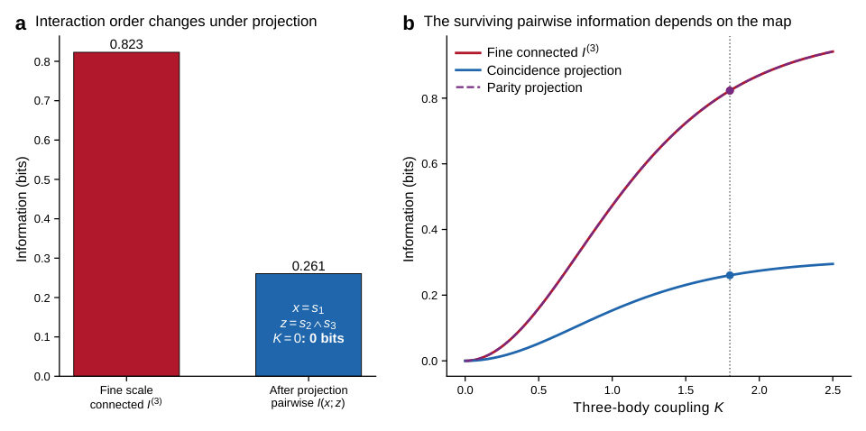
<figcaption class="paper-figure-caption"><b>Fig 1.</b> FIG. 1. A higher-order dependency becomes pairwise after projection. (a) Exact enumeration at K = 1.8 gives 0.823 bits of connected third-order information at the fine scale and 0.261 bits of pairwise mutual information after the disjoint coincidence projection x = b1, z = b2 ∧b3. The projected variables are independent at K = 0. (b) The information that survives as pairwise depends on the map: an XNOR/parity projection retains all of I(3), whereas the coincidence map retains only part.</figcaption>
</figure>
<figure class="paper-figure-card">
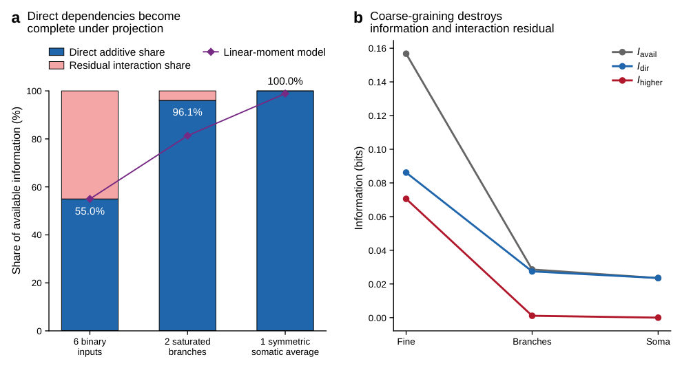
<figcaption class="paper-figure-caption"><b>Fig 2.</b> FIG. 2. Direct dependencies become more complete along an exact cascade. (a) Blue bars show F for the coordinate- invariant categorical-additive family; pink shows the residual share. Purple diamonds show the more restrictive linear-moment family, which yields 55.0%, 81.3% and 98.9%. (b) Coarse-graining reduces the available information Iavail, the captured direct information Idir and, more sharply, the conditional-KL residual Ihigher. Values are exact sums over all 64 input states.</figcaption>
</figure>
<figure class="paper-figure-card">
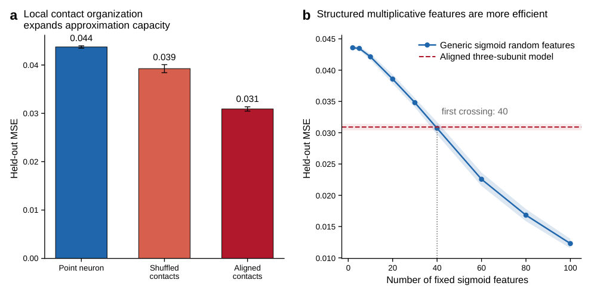
<figcaption class="paper-figure-caption"><b>Fig 3.</b> FIG. 3. Organized multi-contact features improve held-out approximation. (a) Mean held-out MSE for a linear point neuron, a three-subunit model with shuffled contacts and a three-subunit model with contacts aligned to the target’s pair structure. Error bars are 95% normal intervals across 100 independent train–test trials (6,000 samples in each split). (b) Mean held-out MSE of a generic fixed sigmoid random-feature network. The first tested width whose mean reaches the aligned model is 40. Shading shows 95% normal intervals across 40 trials.</figcaption>
</figure>
<figure class="paper-figure-card">
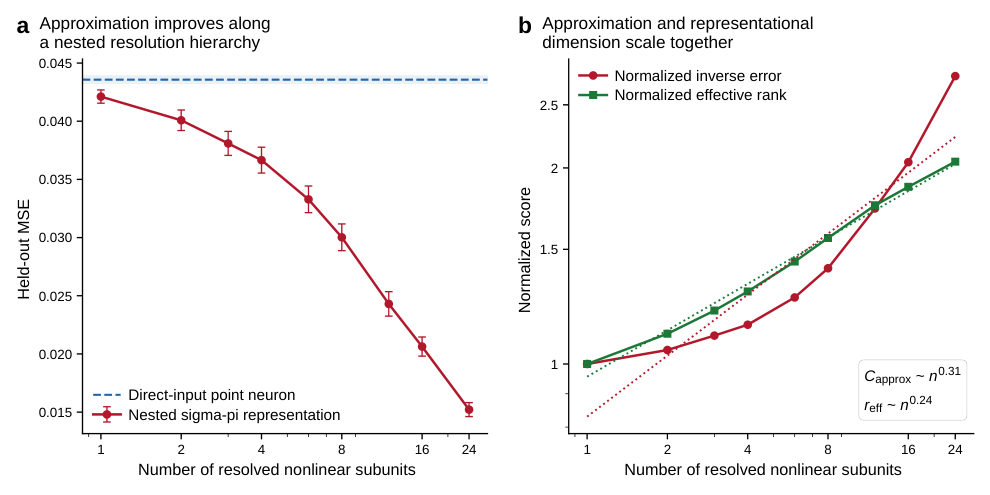
<figcaption class="paper-figure-caption"><b>Fig 4.</b> FIG. 4. Approximation and effective dimension grow in a nested hierarchy. (a) Mean held-out MSE as progressively more nonlinear sigma–pi subunits are exposed from the same architecture; the dashed line is the direct-input point baseline. Error bars and baseline shading are 95% normal intervals across 60 independent architectures and train–test sets (5,000 samples per split). (b) Normalized inverse error and normalized effective rank with log-space power-law fits. Exponent intervals are 95% percentile-bootstrap intervals over trials (2,000 resamples).</figcaption>
</figure>
</div>

<p><strong>Summary.</strong> This theoretical paper analyzes neural computation by treating measurement resolution as a critical variable, analogous to the coastline paradox. It develops an information-theoretic framework to decompose total predictive information into direct (pairwise) and higher-order components. The core finding is that the apparent complexity of neural processing is not fixed but critically depends on the specific scale or projection used for observation.</p>
<p><strong>Why it may be interesting.</strong> While focused on neuroscience, the mathematical framework—using information theory to analyze how complexity is revealed or suppressed by measurement resolution—is highly relevant to understanding effective theories in complex many-body systems, such as those studied in disordered or correlated electron systems.</p>
<details>
<summary>Detailed structure</summary>
<p><strong>Main problem.</strong> The paper investigates how the apparent structure of neural computation changes depending on the observational resolution, drawing an analogy to the Mandelbrot coastline paradox.</p>
<p><strong>Main result.</strong> The apparent interaction order and information content are highly dependent on the chosen measurement scale or projection map, meaning no single, scale-independent description of neural computation is uniquely determined.</p>
<p><strong>Method.</strong> It employs a scale-indexed information-theoretic decomposition, calculating measures like available information ($I_{avail}$) and direct information ($I_{dir}$) to quantify how much predictive power is captured by simple, pairwise models versus complex, higher-order interactions.</p>
<p><strong>Model / system.</strong> The analysis uses abstract statistical models applied to neuronal computation, considering dendritic cascades and synaptic inputs, often modeled with binary inputs and higher-order interaction laws.</p>
<p><strong>Key observables.</strong> Available Information ($I_{avail}$), Direct Information ($I_{dir}$), Higher-Order Interaction Residual ($I_{higher}$), and the normalized direct fraction ($F$).</p>
<p><strong>Important parameters / regimes.</strong> Observational resolution ($\epsilon$), projection map parameters ($\alpha, \Delta$), and the order of interaction (e.g., third-order coupling in the neuron model).</p>
<p><strong>Assumptions / limitations.</strong> The analysis is deliberately epistemic, treating the observed relationship as a projection rather than the true underlying physical law, and it notes that the point-neuron model is an abstraction, not the definitive reality.</p>
<p><strong>Figures summary.</strong> Figures illustrate how higher-order dependencies can appear pairwise after specific projections, and how the direct fraction ($F$) and available information ($I_{avail}$) change depending on the projection map used.</p>
<p><strong>Paper structure.</strong> The paper builds from the general concept of resolution dependence (coastline paradox) to a formal information-theoretic decomposition ($I_{avail} = I_{dir} + I_{higher}$), demonstrating this formalism using abstract spin systems and then applying it to detailed neuron models involving specific projections (symmetric vs. asymmetric maps).</p>
</details>
<details>
<summary>Abstract</summary>
<p>Mandlebrot's coastline paradox reframes measurement as a joint property of an object and its ruler. Here we ask how observational resolution shapes the apparent structure of neural computation. We introduce a scale-indexed decomposition that separates the predictive information captured by direct dependencies from the residual outside that model family. Exact constructions show that projection can convert higher-order dependence into pairwise structure. Projection can increase the direct fraction of surviving information even as total predictive information decreases. A schematic branch-to-soma cascade grounds these effects in local coincidence detection, saturating integration and somatic mixing. Resolving organized nonlinear subunits improves approximation and raises effective representational rank. In a nested hierarchy, these gains occur without increasing information about the target. This distinction separates information availability from access by a restricted readout. A point-neuron or direct population model therefore establishes an effective description at a specified scale. It does not uniquely identify the finer computation that generated the observed relation. Which resolution is adequate depends on the observable and perturbation of interest.</p>
</details>
<p><sub><a href="#top">↑ back to top</a></sub></p>

<p><a id="paper-2610.19744"></a></p>
<h3 id="resolving-structural-uncertainty-in-stochastic-dynamical-systems-via-ensemble-based-bayesian-inference"><a href="http://arxiv.org/abs/2610.19744v1">Resolving Structural Uncertainty in Stochastic Dynamical Systems via Ensemble-Based Bayesian Inference</a></h3>
<p><strong>Authors:</strong> Francesco Zambelli, Valeria D'Andrea, Manlio De Domenico<br>
<strong>Type:</strong> theory · <strong>Category:</strong> disordered systems and neural networks · <strong>PDF:</strong> <a href="https://arxiv.org/pdf/2610.19744v1">https://arxiv.org/pdf/2610.19744v1</a><br>
<strong>Analysis basis:</strong> full PDF text, analyzed in chunks
<strong>Topic relevance:</strong> <code>Keldysh / 2PI / non-Gaussian methods</code> <strong>2/5</strong> · <code>methods for driven-dissipative</code> <strong>2/5</strong> · <code>quantum measurements</code> <strong>1/5</strong></p>
<div class="figure-strip-hint">↔ Scroll figures horizontally</div>
<div class="paper-figures-scroll">
<figure class="paper-figure-card">
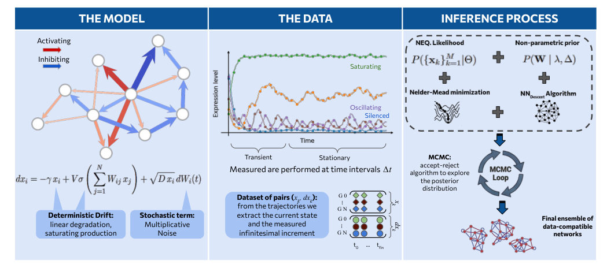
<figcaption class="paper-figure-caption"><b>Fig 1.</b> FIG. 1 Schematic overview of the proposed Bayesian inference framework. In the left panel, we show the network topology and the model used to generate the synthetic data. In the central panel, we show an example of trajectory generated from the model, and the corresponding dataset of pairs (xk, dxk) of states and infinitesimal increments dxk = ∆xk</figcaption>
</figure>
<figure class="paper-figure-card">
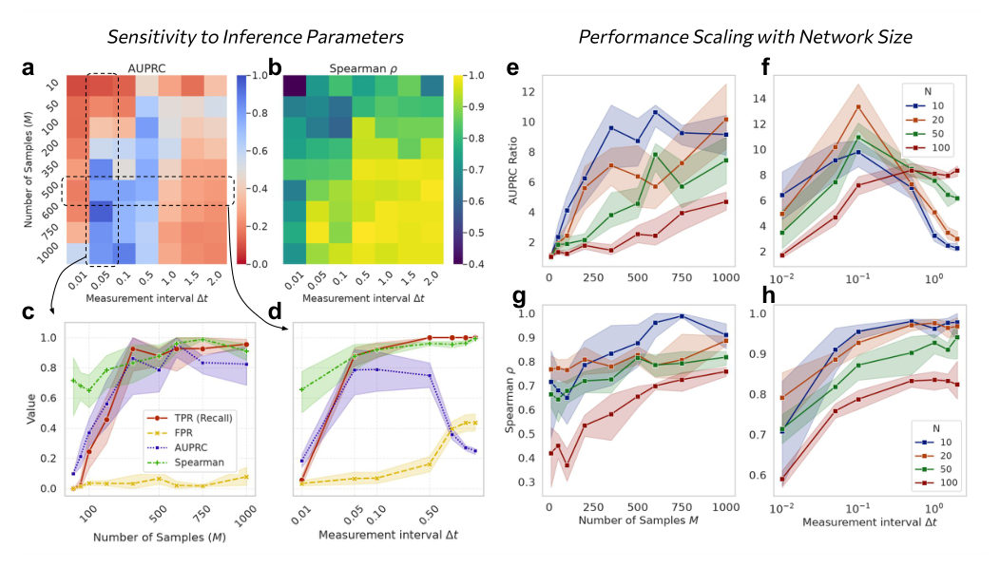
<figcaption class="paper-figure-caption"><b>Fig 2.</b> FIG. 2 Inference performance analysis: In panel a and b we present the grid search results to evaluate the inference performance as a function of the number of sampled pairs Mpairs and the sampling interval ∆t. a reports the AUPRC, which quantifies the topological accuracy of the probabilistic inferred network, while b reports the Spearman correlation coeffient, which quantifies the accuracy of the inferred regulatory weights. The results are for network of size N = 10 and for the transient regime. In panel c and d we report respectively the slices of the grid search results both trough the variation of sampling interval ∆t (c) and the number of sampled pairs Mpairs (d). In particular, in...</figcaption>
</figure>
<figure class="paper-figure-card">
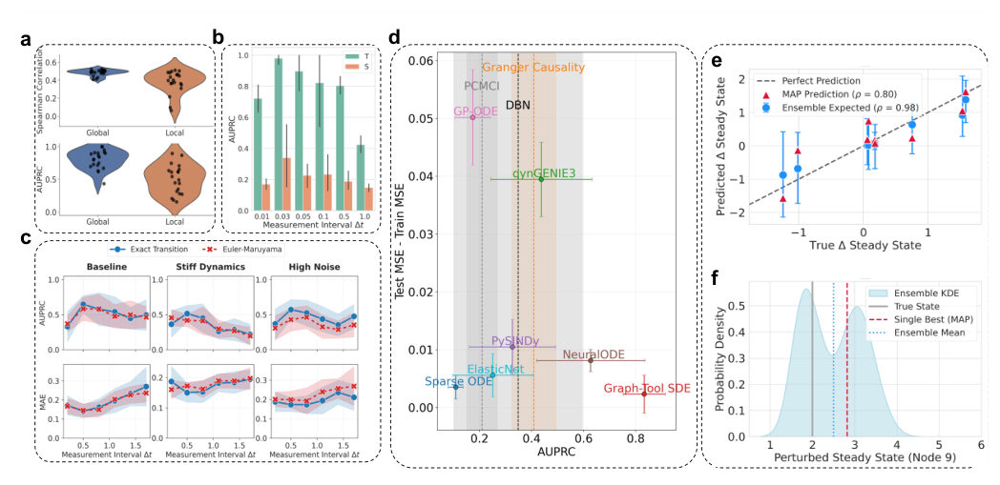
<figcaption class="paper-figure-caption"><b>Fig 3.</b> FIG. 3 Benchmarking against canonical inference paradigms. In panels a, b, and c, we report the robustness of the inference engine across experimental regimes: (a) parameter regularization, comparing node-specific (local) vs. shared (global) kinetic parameters θ = {γ, V, D}; (b) non-equilibrium dynamics, comparing transient vs. stationary trajectories; and (c) discretization sensitivity, comparing exact transition moments against the Euler-Maruyama (E-M) approximation. In panel d, we benchmark the proposed Bayesian SDE approach against an extensive suite of nine canonical inference paradigms spanning tree-based, sparse regression, information-theoretic, deep learning (Neural ODEs), and...</figcaption>
</figure>
<figure class="paper-figure-card">
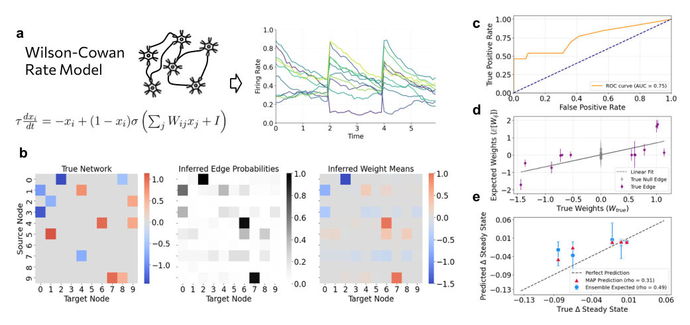
<figcaption class="paper-figure-caption"><b>Fig 4.</b> FIG. 4 Results of Wilson-Cowan Rate Model. In panel a is presented the schematic of the Wilson-Cowan model, which is a non-linear dynamical system that describes the interactions between excitatory and inhibitory populations of neurons, regulated by a set of non-linear differential equations different from the SDE model used for inference. Because our grid search established that the algorithm excels at quantitatively resolving small, homogenously connected architectures, we modeled this local micro-scale neural population using an Erd˝os- R´enyi topology (N = 10, p = 0.15), with a mixture of excitatory and inhibitory connections. This explicitly tests the framework’s ability to operate on...</figcaption>
</figure>
</div>

<p><strong>Summary.</strong> This paper introduces a fully Bayesian, ensemble-based inference framework to solve the challenging problem of reconstructing network structure from noisy time-series data of stochastic dynamical systems. By combining an SDE likelihood with an MDL prior, it rigorously quantifies structural uncertainty. The method proves that accounting for the entire ensemble of plausible structures leads to superior predictions for system responses compared to using single best-guess estimates.</p>
<p><strong>Why it may be interesting.</strong> The rigorous probabilistic treatment of structural uncertainty, moving beyond point estimates, is highly valuable for modeling complex, non-equilibrium systems where underlying connectivity is unknown, bridging statistical inference with dynamical systems theory.</p>
<details>
<summary>Detailed structure</summary>
<p><strong>Main problem.</strong> The core problem is the ill-posed inverse task of reconstructing the interaction structure (network topology) of complex stochastic dynamical systems from limited, noisy time-series observations.</p>
<p><strong>Main result.</strong> The proposed ensemble-based Bayesian framework provides significantly more robust and reliable predictions for downstream perturbations compared to traditional single-point (MAP) estimates, especially when non-stationary transient data is available.</p>
<p><strong>Method.</strong> It employs a fully Bayesian inference framework combining a continuous-time SDE likelihood (Onsager-Machlup quasi-potential) with a non-parametric Minimum Description Length (MDL) structural prior.</p>
<p><strong>Model / system.</strong> The system is modeled by continuous-time Stochastic Differential Equations (SDEs) describing complex dynamics, such as those found in neural networks or gene regulatory circuits. The dynamics are governed by coupling weights (W) and intrinsic noise.</p>
<p><strong>Key observables.</strong> The primary observables are the time-series data $X$ from the stochastic system, and the key diagnostic is the full posterior distribution over network configurations, $  ext{P}(W,   heta|X)$.</p>
<p><strong>Important parameters / regimes.</strong> Key parameters include the interaction weights $W_{ij}$, the noise strength $D$, and the system relaxation rates $\gamma$. The analysis highlights the importance of non-stationary transient data.</p>
<p><strong>Assumptions / limitations.</strong> Key assumptions include the use of an SDE likelihood formulation and the necessity of non-stationary data to resolve causality. Limitations include the instability of the Euler-Maruyama method for large time steps.</p>
<p><strong>Figures summary.</strong> The notes do not provide a summary of figures, but they detail the mathematical structure of the Hessian matrix and the derivation of exact analytical transition moments for the SDE.</p>
<p><strong>Paper structure.</strong> The paper is structured around establishing the ill-posed nature of the inverse problem, proposing the Bayesian framework incorporating MDL regularization, detailing the optimization scheme (MCMC + Nelder-Mead), and validating the ensemble approach against point estimates using benchmark models.</p>
</details>
<details>
<summary>Abstract</summary>
<p>Recovering the interaction structure of complex stochastic dynamical systems from sparse time-series observations is an inherently ill-posed inverse problem. The posterior over network configurations is high-dimensional, highly degenerate, and shaped by the non-equilibrium nature of the available data. To address this, we propose a fully Bayesian, ensemble-based inference framework. Our approach grounds a continuous-time Stochastic Differential Equation (SDE) likelihood formulation---acting mathematically as an Onsager-Machlup quasi-potential for non-equilibrium paths---within a non-parametric Minimum Description Length (MDL) structural prior. This framework rigorously penalizes model complexity and avoids kinetic overfitting by forcing continuous parameters into a finite vocabulary of discrete categories. The joint posterior is optimized using a block-coordinate scheme combining sub-quadratic Markov Chain Monte Carlo (MCMC) topological sampling with deterministic Nelder-Mead parameter optimization. Using highly non-linear macroscopic population dynamics as a benchmark, we demonstrate that inference requires non-stationary transient data to resolve causal information. Furthermore, we prove that propagating structural uncertainty via ensemble-based posterior analysis produces significantly more robust and reliable predictions for downstream perturbation outcomes than traditional single-point (MAP) estimates. The framework is highly generalizable, capturing fundamental topological constraints even under severe generative model mismatches, offering a robust tool for uncertainty-aware inference in complex stochastic systems.</p>
</details>
<p><sub><a href="#top">↑ back to top</a></sub></p>

<p><a id="paper-2610.19106"></a></p>
<h3 id="gravity-from-generalized-entropy"><a href="http://arxiv.org/abs/2610.19106v1">Gravity from generalized entropy</a></h3>
<p><strong>Authors:</strong> Hussain Gohar<br>
<strong>Type:</strong> theory · <strong>Category:</strong> other · <strong>PDF:</strong> <a href="https://arxiv.org/pdf/2610.19106v1">https://arxiv.org/pdf/2610.19106v1</a><br>
<strong>Analysis basis:</strong> full PDF text, analyzed in chunks
<strong>Topic relevance:</strong> <code>Keldysh / 2PI / non-Gaussian methods</code> <strong>2/5</strong> · <code>quantum measurements</code> <strong>2/5</strong></p>
<div class="figure-strip-hint">↔ Scroll figures horizontally</div>
<div class="paper-figures-scroll">
<figure class="paper-figure-card">
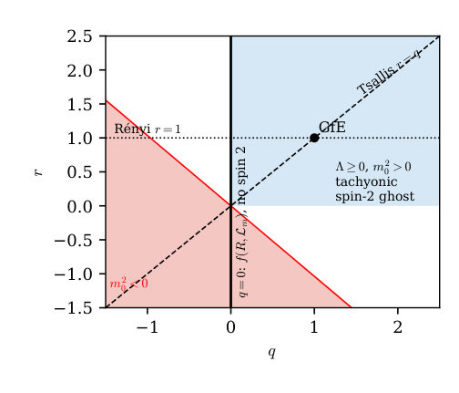
<figcaption class="paper-figure-caption"><b>Fig 1.</b> FIG. 1. Sharma–Mittal GfE spectrum in the (q, r) plane. In blue, the scalar is healthy and the potential is non-negative, but a tachyonic spin-2 ghost is present. Below the red line 27r + 28q = 0, the scalar is tachyonic. At q = 0 the massive spin-2 mode is absent. The dashed diagonal is Tsallis, the dotted horizontal line is R´enyi, and the dot is GfE. The re- gion q &lt; 0 is a formal continuation beyond the non-negative- divergence domain; for q &gt; 0, r &lt; 0, potential non-negativity is not guaranteed.</figcaption>
</figure>
</div>

<p><strong>Summary.</strong> This paper proposes Gravity from Generalized Entropy (GfGE), deriving the gravitational Lagrangian from generalized quantum relative entropies. It analyzes the resulting theory's spectrum, finding conditions that eliminate unphysical ghost modes. The work successfully connects entropy choices to higher-curvature terms and provides insights into black hole thermodynamics and the cosmological constant.</p>
<p><strong>Why it may be interesting.</strong> While focused on gravity, the core mathematical machinery involves generalizing entropy measures (Tsallis, Rényi) and applying them to field theory dynamics, which shares conceptual links with non-extensive statistical mechanics used in complex quantum systems.</p>
<details>
<summary>Detailed structure</summary>
<p><strong>Main problem.</strong> The paper develops a framework to derive gravitational physics from entropy principles, extending the concept from Gravity from Entropy (GfE) to Gravity from Generalized Entropy (GfGE). It seeks to understand how the choice of entropy functional dictates the resulting gravitational dynamics.</p>
<p><strong>Main result.</strong> The GfGE framework predicts a ghost-free spectrum under specific conditions on the entropy generator, and the theory yields a common Einstein-Hilbert term across generalized entropy families. The auxiliary field is shown to be proportional to the tensor in Wald's entropy formula on-shell.</p>
<p><strong>Method.</strong> The analysis uses quantum relative entropy (GQRE) applied to the spacetime metric treated as a quantum operator. It involves extending this to Tsallis, Rényi, and Sharma-Mittal entropies and analyzing the resulting effective field theory in the weak-field limit.</p>
<p><strong>Model / system.</strong> The system is general relativity coupled to matter, where the gravitational action is derived from the quantum relative entropy between the spacetime metric and a matter-induced metric. The analysis treats the metric itself as a quantum operator.</p>
<p><strong>Key observables.</strong> Linearized spectrum (graviton, scalar, massive spin-2 mode), horizon entropy corrections (area law + constant/inverse-area terms), and the effective cosmological constant.</p>
<p><strong>Important parameters / regimes.</strong> Entropy parameters (e.g., $q$ for Tsallis), coupling constants ($\alpha, eta$), and curvature scales.</p>
<p><strong>Assumptions / limitations.</strong> The metric is treated as a quantum operator, and the analysis relies on specific conditions (e.g., curvature entering through its scalar trace) to eliminate unphysical ghost degrees of freedom.</p>
<p><strong>Paper structure.</strong> The paper progresses by first establishing the GfE framework using GQRE, then generalizing it to GfGE using specific entropy families. It proceeds to analyze the weak-field spectrum, determine conditions for ghost elimination, and finally derive results for horizon entropy and the cosmological constant.</p>
</details>
<details>
<summary>Abstract</summary>
<p>Gravity from entropy (GfE) identifies its Lagrangian with the geometric quantum relative entropy (GQRE) between the spacetime metric and a metric induced by matter and curvature, treating the metric itself as a quantum operator. We extend this construction to the Tsallis, Rényi, and Sharma-Mittal families, which we call gravity from generalized entropy (GfGE), and determine their common Einstein limit, weak-field spectra, auxiliary-field formulation, and horizon entropy. The entropy choice controls the leading higher-curvature terms and additional modes. We confirm that the linearized GfE spectrum contains a healthy scalar and a Planck-scale tachyonic spin-2 ghost. We identify the conditions that remove this ghost: curvature must enter through its scalar trace, or the entropy generator must be flat to quadratic order at the identity. The latter gives exact general relativity for Tsallis at $q=0$ and ghost-free $f(R,L_m)$ theories for Rényi and Sharma-Mittal. On shell, the auxiliary G-field is proportional to the tensor in Wald's entropy formula. For analytic entropy functions, horizons with a single curvature scale have an area term followed by constant and inverse-area corrections. We also extend the volume-constraint cosmological constant to the full family; its leading entropy dependence is set by the scalar mass. A finite set of entropy-function derivatives controls the leading weak-curvature departures from general relativity.</p>
</details>
<p><sub><a href="#top">↑ back to top</a></sub></p>

<p><a id="paper-2610.18967"></a></p>
<h3 id="non-abelian-quantum-hall-states-at-strong-landau-level-mixing-finding-anyons-with-first-principles-ai"><a href="http://arxiv.org/abs/2610.18967v1">Non-Abelian quantum Hall states at strong Landau level mixing: finding anyons with first-principles AI</a></h3>
<p><strong>Authors:</strong> Pierre-Antoine Graham, Ahmed Abouelkomsan, Liang Fu<br>
<strong>Type:</strong> theory · <strong>Category:</strong> strongly correlated electrons · <strong>PDF:</strong> <a href="https://arxiv.org/pdf/2610.18967v1">https://arxiv.org/pdf/2610.18967v1</a><br>
<strong>Analysis basis:</strong> full PDF text, analyzed in chunks
<strong>Topic relevance:</strong> <code>analog quantum simulation</code> <strong>2/5</strong> · <code>methods for driven-dissipative</code> <strong>2/5</strong></p>
<div class="figure-strip-hint">↔ Scroll figures horizontally</div>
<div class="paper-figures-scroll">
<figure class="paper-figure-card">
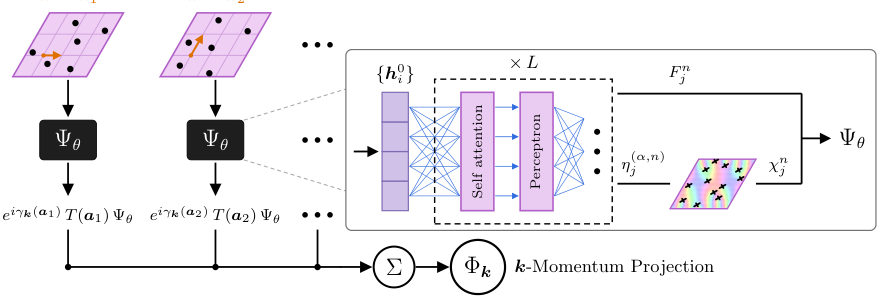
<figcaption class="paper-figure-caption"><b>Fig 1.</b> FIG. 1. Schematic illustration of the momentum-resolved MagNet ansatz. Electron coordinates are mapped to high- dimensional features {hi} that are periodic on the torus and then passed through L layers combining self-attention and multilayer perceptrons. The network outputs the periodic amplitudes F n j and the winding maps η(α,n) j , which parametrize the zeros (crosses) of the quasiperiodic factor χn j , shown on the supercell with its phase encoded in color. Together, F n j and χn j form the many-body orbitals of the variational wave function Ψθ in Eq. (2). The momentum eigenstate Φk is then obtained by summing the translated copies of Ψθ over the Nϕ center-of-mass magnetic translations...</figcaption>
</figure>
<figure class="paper-figure-card">
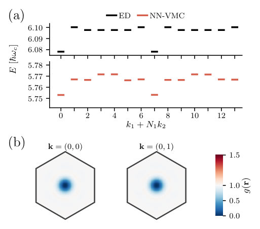
<figcaption class="paper-figure-caption"><b>Fig 2.</b> FIG. 2. (a) Lowest energy in each momentum sector k = (k1, k2), labeled by k1 + N1k2, for N = 21 electrons and κ = 1.0, obtained from NN-VMC and from ED restricted to the LLL and 1LL. We use a hexagonal supercell spanned by L1 = N1a1 and L2 = N2a2 with N1 = 7 and N2 = 2, so that ki = 0, . . . , Ni −1. The NN-VMC energies lie well below the ED energies in all sectors, and both show a twofold degenerate ground state at k = (0, 0) and (0, 1). (b) Pair correlation function g(r) of the two NN-VMC ground states.</figcaption>
</figure>
<figure class="paper-figure-card">
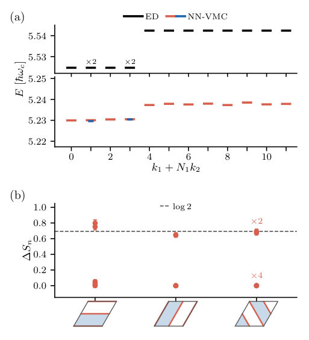
<figcaption class="paper-figure-caption"><b>Fig 3.</b> FIG. 3. (a) Lowest energies in each momentum sector k = (k1, k2), labeled by k1 + N1k2, for N = 18 electrons and κ = 1.0, obtained from NN-VMC and from ED restricted to the LLL and 1LL. We use a hexagonal supercell spanned by L1 = N1a1 and L2 = N2a2 with N1 = 4 and N2 = 3. Numbers indicate twofold degenerate ED levels within a sec- tor. The blue labeled states are orthogonal ground states obtained with NN-VMC. (b) Differences ∆Sn between the second R´enyi entropies of the six MESs and the smallest one, for three inequivalent noncontractible cuts of the torus (bot- tom). For each cut, four MESs have ∆Sn ≈0, consistent with Abelian sectors, while the remaining two lie close to log 2 (dashed...</figcaption>
</figure>
<figure class="paper-figure-card">
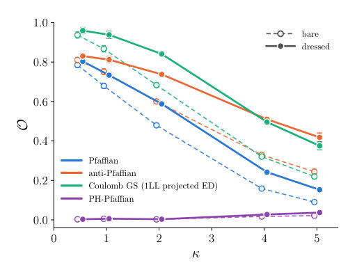
<figcaption class="paper-figure-caption"><b>Fig 4.</b> FIG. 5. Overlap O between the NN-VMC ground-state manifold and the Moore–Read Pfaffian, the anti-Pfaffian, the PH-Pfaffian, and the exact Coulomb ground state of the 1LL- projected Hamiltonian, as a function of Landau level mixing κ, for N = 18 electrons. Open symbols with dashed lines show overlaps with the bare trial states, defined within the LLL and 1LL, and filled symbols with solid lines show overlaps with dressed trial states, which include a cloud of virtual inter- Landau-level excitations [56]. In both cases, the overlap with the anti-Pfaffian exceeds that with the other trial states at all κ.</figcaption>
</figure>
<figure class="paper-figure-card">
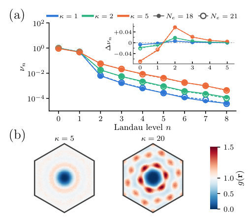
<figcaption class="paper-figure-caption"><b>Fig 5.</b> FIG. 4. (a) Occupation νn of Landau level n, on a logarithmic scale, for N = 18 and N = 21 electrons at κ = 1, 2 and 5. Inset: deviation ∆νn from the unmixed occupations ν0 = 1, ν1 = 1/2, and νn≥2 = 0. Both the LLL and the 1LL are depleted, with the weight transferred to higher levels. (b) Pair correlation function computed at κ = 5 and 20 (see [56] for more details).</figcaption>
</figure>
</div>

<p><strong>Summary.</strong> This paper pioneers the use of neural-network variational wave functions to solve the complex problem of non-Abelian quantum Hall states under strong Landau level mixing. By optimizing the wave function directly from the microscopic Hamiltonian, the authors successfully identified the underlying topological order, confirming the presence of Ising-type anyons and predicting the anti-Pfaffian state. It showcases the power of AI in tackling intractable, strongly correlated many-body physics.</p>
<p><strong>Why it may be interesting.</strong> This work is highly relevant as it pushes the boundary of theoretical condensed matter physics by applying modern AI techniques (NNs) to solve notoriously difficult, strongly correlated quantum systems, providing concrete predictions for experimental quantum Hall devices.</p>
<details>
<summary>Detailed structure</summary>
<p><strong>Main problem.</strong> The primary challenge is accurately identifying the topological order realized in fractional quantum Hall (FQH) states, especially when strong Landau level mixing is present, to find non-Abelian anyons.</p>
<p><strong>Main result.</strong> The authors found a degenerate ground-state manifold exhibiting anyons with quantum dimension $\sqrt{2}$, confirming Ising-type non-Abelian order, and showed that Landau level mixing favors the anti-Pfaffian state.</p>
<p><strong>Method.</strong> They developed and employed a momentum-resolved neural-network variational wave function (MagNet ansatz) optimized via Neural Network Variational Monte Carlo (NN-VMC) to solve the many-body Hamiltonian.</p>
<p><strong>Model / system.</strong> The system models spin-polarized electrons in a 2D plane subjected to a strong perpendicular magnetic field, studied specifically at the filling factor $
u = 3/2$. The Hamiltonian includes the kinetic energy and the Coulomb interaction.</p>
<p><strong>Key observables.</strong> Topological ground-state degeneracy, entanglement properties (Rényi entanglement entropy), pair correlation function $g(r)$, and the overlap of the ground state with known theoretical candidates (e.g., anti-Pfaffian).</p>
<p><strong>Important parameters / regimes.</strong> Filling factor $
u = 3/2$, and the Landau level mixing parameter $\kappa = U/\hbar\omega_c$, with studies focusing on the strong mixing regime.</p>
<p><strong>Assumptions / limitations.</strong> The use of a momentum-resolved neural-network variational ansatz is central, which allows for a non-perturbative treatment that incorporates all Landau levels.</p>
<p><strong>Figures summary.</strong> Figures illustrate the architecture of the MagNet ansatz, the energy spectra comparing NN-VMC to ED, the pair correlation function $g(r)$ showing transitions from liquid to crystalline order, and entanglement diagnostics confirming the $\sqrt{2}$ quantum dimension.</p>
<p><strong>Paper structure.</strong> The paper progresses by first establishing the necessity of the NN approach to handle strong Landau level mixing. It then uses entanglement diagnostics to confirm the non-Abelian nature ($\sqrt{2}$ dimension) and uses overlap calculations to pinpoint the anti-Pfaffian state. Subsequent analysis details the transition to Wigner crystal formation at high mixing.</p>
</details>
<details>
<summary>Abstract</summary>
<p>Non-Abelian anyons, strange particles forming the basis of fault-tolerant topological quantum computing, are predicted to emerge in fractional quantum Hall states at even-denominator filling factors. Identifying which topological order is realized has proven to be a challenging problem that requires an accurate, non-perturbative treatment of realistic Landau level mixing, which has so far been missing from theoretical studies. Here we present the first complete solution of non-Abelian quantum Hall problem that includes all electrons and all Landau levels, for spin-polarized electrons at filling factor $ν= 3/2$. We develop a momentum-resolved neural-network variational wave function, optimized solely on the microscopic Hamiltonian, which gives direct access to the topologically degenerate ground states. Without any physics input about the expected outcome, it discovers a degenerate ground-state manifold whose entanglement reveals anyons with quantum dimension $\sqrt{2}$, the hallmark of Ising-type non-Abelian order. By directly computing the overlap with trial wave functions, we further show that Landau level mixing favors the anti-Pfaffian over other candidate states. Our results demonstrate the power of neural-network wave functions in finding and characterizing non-Abelian anyons from first principles, in regimes of strong Landau level mixing, relevant to many recent experiments.</p>
</details>
<p><sub><a href="#top">↑ back to top</a></sub></p>

<p><a id="paper-2610.19995"></a></p>
<h3 id="deep-learning-of-phase-transitions-for-bilinear-biquadratic-spin-1-chains-from-correlation-aspects"><a href="http://arxiv.org/abs/2610.19995v1">Deep Learning of Phase Transitions for Bilinear-Biquadratic Spin-1 Chains from Correlation Aspects</a></h3>
<p><strong>Authors:</strong> Ming-Chiang Chung, Yu-Ting Kuo, Ian McCulloch, Yuan-Hong Tsai<br>
<strong>Type:</strong> theory · <strong>Category:</strong> disordered systems and neural networks · <strong>PDF:</strong> <a href="https://arxiv.org/pdf/2610.19995v1">https://arxiv.org/pdf/2610.19995v1</a><br>
<strong>Analysis basis:</strong> full PDF text, analyzed in chunks
<strong>Topic relevance:</strong> <code>methods for driven-dissipative</code> <strong>2/5</strong> · <code>analog quantum simulation</code> <strong>1/5</strong></p>
<div class="figure-strip-hint">↔ Scroll figures horizontally</div>
<div class="paper-figures-scroll">
<figure class="paper-figure-card">
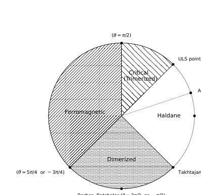
<figcaption class="paper-figure-caption"><b>Fig 1.</b> FIG. 1: Phase diagram of the BLBQ model.</figcaption>
</figure>
<figure class="paper-figure-card">
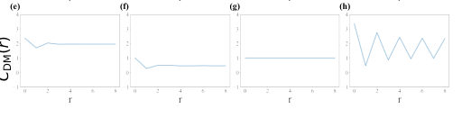
<figcaption class="paper-figure-caption"><b>Fig 2.</b> FIG. 2: Spin-spin correlations CSS(r) (upper row) and dimer-dimer correlations CDM(r) (lower row) at represen- tative points in the Haldane (θ = 0), critical trimerized (θ = 0.375π), ferromagnetic (θ = 0.875π), and dimerized (θ = 1.5π) phases.</figcaption>
</figure>
<figure class="paper-figure-card">
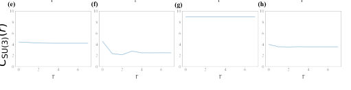
<figcaption class="paper-figure-caption"><b>Fig 3.</b> FIG. 3: Trimer-trimer correlations CTM(r) (upper row) and SU(3) correlations CSU(3)(r) (lower row) at the same repre- sentative points as in Fig. 2.</figcaption>
</figure>
<figure class="paper-figure-card">
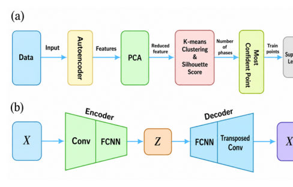
<figcaption class="paper-figure-caption"><b>Fig 4.</b> FIG. 4: Schematic illustration of the machine-learning pro- tocol. (a) Overall pipeline for extracting phase information from correlation matrices using autoencoder feature extrac- tion, PCA, K-means clustering, silhouette analysis, and su- pervised refinement. (b) Autoencoder architecture used to compress the input correlation matrices into latent represen- tations.</figcaption>
</figure>
<figure class="paper-figure-card">
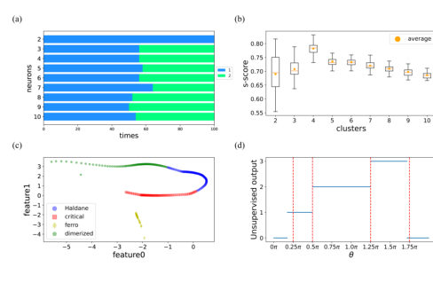
<figcaption class="paper-figure-caption"><b>Fig 5.</b> FIG. 5: AE results using all four correlation functions, CSS(r), CDM(r), CTM(r), and CSU(3)(r), as input data for the BLBQ model. (a) Discrete distribution of the necessary number of latent neurons dz for a given number of neurons nmid in the middlemost layer, with nmid = 2, . . . , 10 along the verti- cal axis. The statistics are obtained from 100 independently trained AEs. The length of each color bar is proportional to the number of times that a given dz occurs among the 100 models, and different colors denote different values of dz. (b) Box plot of the silhouette scores as a function of the number of clusters n obtained from K-means clustering. (c) Latent representations in the basis of...</figcaption>
</figure>
</div>

<p><strong>Summary.</strong> This work applies advanced machine learning techniques to map the quantum phase diagram of the spin-1 BLBQ chain. It reveals that different correlation functions encode distinct physical information, as some correlations are necessary in combination to fully delineate the known quantum phases. This demonstrates a powerful synergy between ML diagnostics and fundamental condensed matter physics.</p>
<p><strong>Why it may be interesting.</strong> The integration of deep learning techniques (autoencoders, clustering) to diagnose fundamental physical properties like quantum phase transitions in strongly correlated quantum magnets is highly relevant for developing new computational tools in AMO and condensed matter theory.</p>
<details>
<summary>Detailed structure</summary>
<p><strong>Main problem.</strong> The study investigates how different correlation functions encode distinct physical information necessary for accurately reconstructing the complex phase diagram of the spin-1 bilinear-biquadratic chain.</p>
<p><strong>Main result.</strong> The analysis shows that while the SU(3)-symmetric correlation alone can identify the four natural phases, combining spin-spin and dimer-dimer correlations is necessary for a complete picture, demonstrating the physical role of each correlation type.</p>
<p><strong>Method.</strong> The authors employed a label-free machine learning pipeline, using an autoencoder to compress iDMRG correlation matrices into latent features, followed by K-means clustering and silhouette analysis.</p>
<p><strong>Model / system.</strong> The system is the spin-1 bilinear-biquadratic (BLBQ) chain, governed by a Hamiltonian dependent on an angle $\theta$ that controls the relative strengths of bilinear and biquadratic couplings.</p>
<p><strong>Key observables.</strong> Phase diagram regions (Haldane, dimerized, critical trimerized, ferromagnetic), correlation functions ($   ext{CSS}(r)$, $ ext{CDM}(r)$, $ ext{CSU}(3)(r)$, $  ext{CTM}(r)$), and machine learning diagnostics like silhouette values.</p>
<p><strong>Important parameters / regimes.</strong> The coupling angle $\theta$, which parametrizes the phase diagram, and the specific correlation channels used as input features.</p>
<p><strong>Assumptions / limitations.</strong> The core assumption is that the phase structure can be robustly mapped by analyzing the geometric clustering of latent features derived from various correlation functions.</p>
<p><strong>Figures summary.</strong> Figures illustrate the phase diagram mapping out regions for different phases based on $\theta$, and show how different correlation inputs yield distinct or complementary clustering results.</p>
<p><strong>Paper structure.</strong> The paper introduces the BLBQ model and its complex phase diagram, details the ML pipeline using multiple correlation inputs, presents results showing the unique contribution of each correlation function to phase identification, and concludes by relating these findings to underlying RG structures.</p>
</details>
<details>
<summary>Abstract</summary>
<p>We investigate the role of different correlation functions in reconstructing the phase diagram of the spin-1 bilinear-biquadratic chain, parametrized by the angle $θ$ between the bilinear and biquadratic couplings, using our previously developed label-free machine-learning pipeline \cite{Ming21, Ming23}, in which an autoencoder compresses iDMRG correlation matrices into latent features and K-means clustering with silhouette analysis groups them into phases. Without any prior labels, the scheme reveals four natural phases, the Haldane, dimerized, critical trimerized, and ferromagnetic phases, and accurately locates the Takhtajan-Babujian ($θ=-π/4$), $SU(3)$-symmetric Uimin-Lai-Sutherland ($θ=π/4$), and Ferro-Dimer ($θ=5π/4$) transition points; a shallow supervised refinement further sharpens the phase boundaries. We find that different correlation functions play fundamentally different roles in phase identification. The $SU(3)$-symmetric correlation alone selects a four-cluster partition that can be associated with the four phases, whereas the spin-spin and dimer-dimer correlations must be combined to recover the complete phase diagram. In contrast, the trimer-trimer correlation behaves as a marginal correlation: it is insufficient for phase identification by itself but improves the precision of the predicted phase boundaries when combined with the other correlations. Furthermore, the latent representations and silhouette values reveal signatures that we relate to the $θ$ dependence of the correlations within each phase and, tentatively, to the underlying renormalization-group structure. These results demonstrate that machine learning can not only identify quantum phases but also uncover the physical information encoded in different correlation functions.</p>
</details>
<p><sub><a href="#top">↑ back to top</a></sub></p>

<p><a id="paper-2610.19620"></a></p>
<h3 id="emergent-medium-range-order-in-amorphous-silicon"><a href="http://arxiv.org/abs/2610.19620v1">Emergent medium-range order in amorphous silicon</a></h3>
<p><strong>Authors:</strong> Zhen Zhang, Stephen R. Elliott, Yujie Wang, Walter Kob<br>
<strong>Type:</strong> theory · <strong>Category:</strong> disordered systems and neural networks · <strong>PDF:</strong> <a href="https://arxiv.org/pdf/2610.19620v1">https://arxiv.org/pdf/2610.19620v1</a><br>
<strong>Analysis basis:</strong> full PDF text, analyzed in chunks
<strong>Topic relevance:</strong> <code>methods for driven-dissipative</code> <strong>2/5</strong> · <code>analog quantum simulation</code> <strong>1/5</strong></p>
<div class="figure-strip-hint">↔ Scroll figures horizontally</div>
<div class="paper-figures-scroll">
<figure class="paper-figure-card">
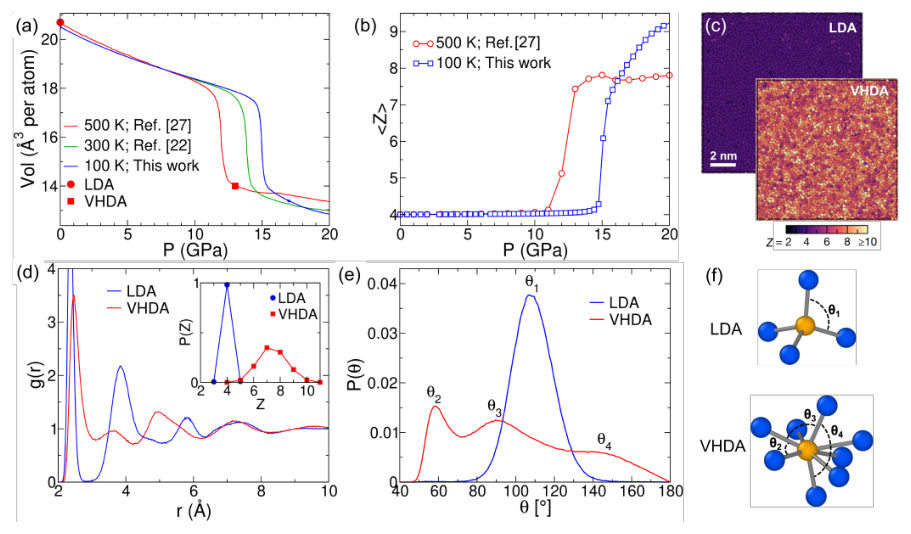
<figcaption class="paper-figure-caption"><b>Fig 1.</b> FIG. 1. (a) Effect of temperature on the equation of state for a-Si. The red circle and square</figcaption>
</figure>
<figure class="paper-figure-card">
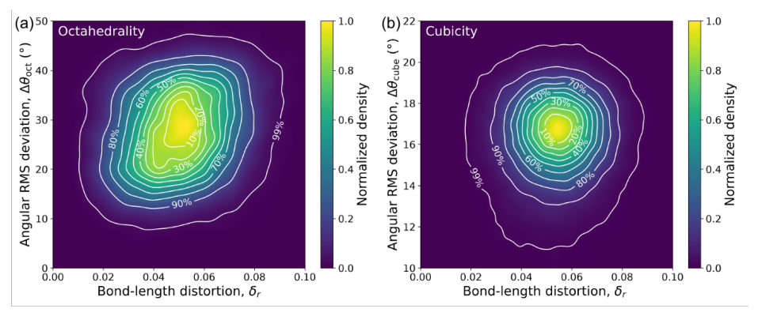
<figcaption class="paper-figure-caption"><b>Fig 2.</b> FIG. 2. (a)–(b) Two-dimensional density maps characterizing the distortions of the local environ-</figcaption>
</figure>
<figure class="paper-figure-card">
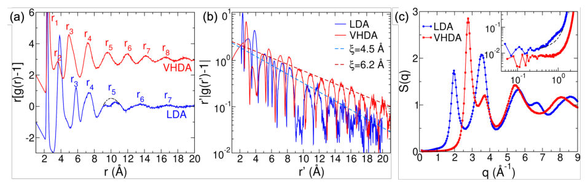
<figcaption class="paper-figure-caption"><b>Fig 3.</b> FIG. 3. MRO as revealed from two-point correlation functions. (a) The correlation function</figcaption>
</figure>
<figure class="paper-figure-card">
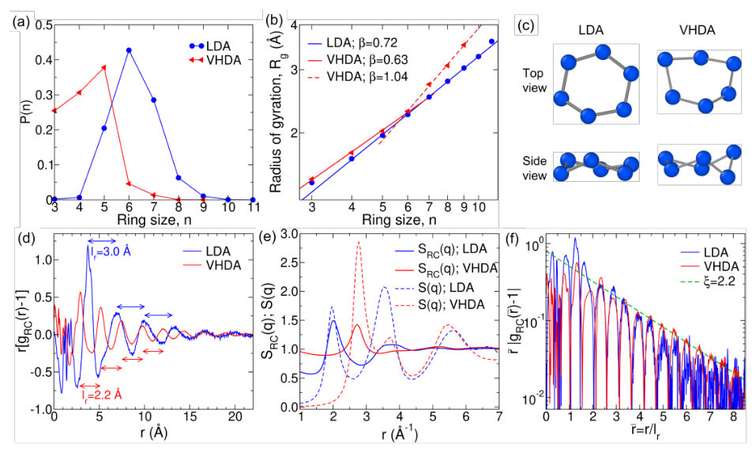
<figcaption class="paper-figure-caption"><b>Fig 4.</b> FIG. 4. MRO as revealed from the topological ring structure. (a) Probability density distribution</figcaption>
</figure>
<figure class="paper-figure-card">
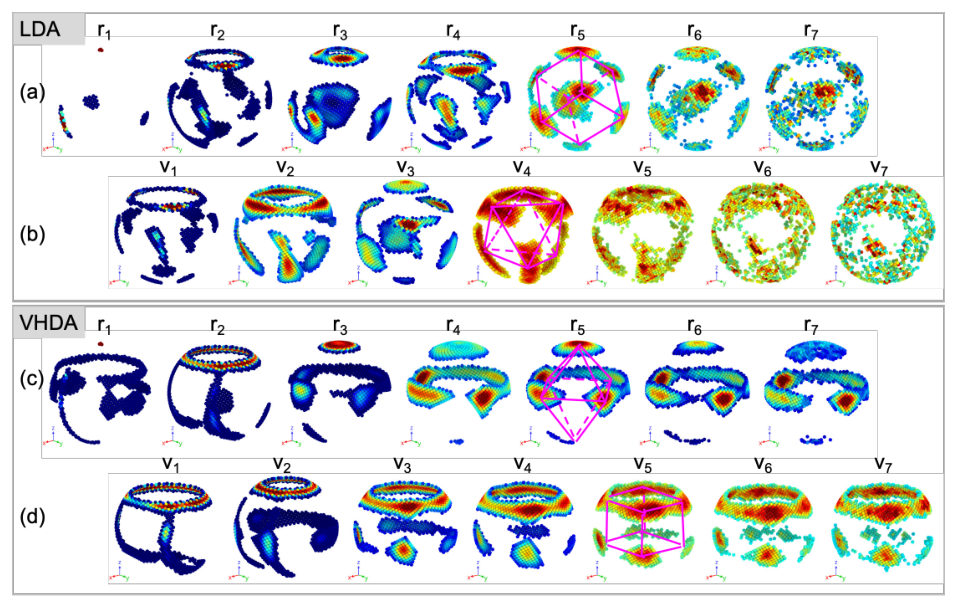
<figcaption class="paper-figure-caption"><b>Fig 5.</b> FIG. 5. Evolution of three-dimensional orientational order with distance. (a)–(b) Snapshots cor-</figcaption>
</figure>
</div>

<p><strong>Summary.</strong> This work uses large-scale simulations on amorphous silicon to map out the structural nature of Medium-Range Order (MRO). It demonstrates that MRO is not a single feature but an emergent property arising from the interplay between local bonding rules and extended, quasi-periodic atomic arrangements. The key finding unifies the structural evidence by showing that the FSDP in diffraction experiments directly corresponds to the characteristic spacing of topological rings in real space.</p>
<p><strong>Why it may be interesting.</strong> While focused on condensed matter structure, the use of advanced machine learning potentials (GAP) and multi-body correlation functions to characterize emergent order in disordered systems is highly relevant to understanding complex many-body dynamics in open quantum systems.</p>
<details>
<summary>Detailed structure</summary>
<p><strong>Main problem.</strong> The study aims to characterize the nature of Medium-Range Order (MRO) in amorphous materials, specifically amorphous silicon, and establish a unified understanding of its structural manifestations.</p>
<p><strong>Main result.</strong> The paper reveals that MRO is characterized by a crossover in atomic symmetry with distance, linking the reciprocal-space signature (FSDP) to the real-space organization of topological rings and emergent symmetries.</p>
<p><strong>Method.</strong> The research employs large-scale machine-learning-driven atomistic simulations and analyzes structural properties using four-point correlation functions and topological ring analysis.</p>
<p><strong>Model / system.</strong> The primary system is amorphous silicon (a-Si), an archetypal network glass, studied under varying density conditions (LDA to VHDA) using atomistic simulations.</p>
<p><strong>Key observables.</strong> Medium-Range Order (MRO), First Sharp Diffraction Peak (FSDP), topological ring spacing, emergent cubic/octahedral symmetries, and structural correlation length ($\xi$).</p>
<p><strong>Important parameters / regimes.</strong> Density (low vs. high), Temperature, and characteristic length scales (e.g., FSDP length scale).</p>
<p><strong>Assumptions / limitations.</strong> The analysis assumes that MRO can be understood by examining the interplay between local bonding constraints and extended, quasi-periodic atomic arrangements.</p>
<p><strong>Figures summary.</strong> Figures illustrate the equation of state, structural motifs (LDA vs. VHDA), and the evolution of symmetry and correlation functions with distance.</p>
<p><strong>Paper structure.</strong> The paper progresses by first characterizing local structure (SRO) and then using higher-order correlation functions to probe MRO, culminating in the direct quantitative link between the FSDP and the real-space ring structure.</p>
</details>
<details>
<summary>Abstract</summary>
<p>Medium-range order (MRO) is an important feature of amorphous materials, but its nature in terms of atomic arrangement has remained elusive. Here, using large-scale machine-learning-driven atomistic simulations of amorphous silicon, we probe the MRO of this archetypal network glass. By characterizing the structure in three dimensions, we reveal that the symmetry of the atomic arrangement around a central atom shows a crossover as a function of distance. At short distances, the structure is determined by local bonding constraints, which evolve from predominantly tetrahedral environments in low-density amorphous silicon to highly coordinated and strongly disordered local environments in very-high-density amorphous silicon. At larger distances, however, distinct cubic- and octahedral-symmetry patterns emerge in the three-dimensional atomic-density distribution, despite the absence of these symmetries at shorter length scales. We find that this crossover is accompanied by a quasi-periodic spatial organization of the topological rings in the structure. The characteristic spacing between ring centers matches the length scale of the first sharp diffraction peak (FSDP) in the structure factor, establishing a direct connection between this reciprocal-space signature of MRO and its real-space organization. These results demonstrate that the FSDP, the spatial correlation of the rings, and emergent orientational symmetries are not independent manifestations of MRO, but reflect different aspects of a common structural organization. Our findings provide a unified real-space picture of MRO in amorphous silicon and suggest that intermediate-range structural order in network glasses emerges from the interplay between local bonding constraints and extended atomic arrangements driven by efficient packing.</p>
</details>
<p><sub><a href="#top">↑ back to top</a></sub></p>

<p><a id="paper-2610.19809"></a></p>
<h3 id="interplay-of-electric-field-and-electronic-correlations-in-pairing-competition-in-bilayer-nickelates"><a href="http://arxiv.org/abs/2610.19809v1">Interplay of electric field and electronic correlations in pairing competition in bilayer nickelates</a></h3>
<p><strong>Authors:</strong> Yanmei Cai, Yicheng Xiong, Ying Liang, Tianxing Ma<br>
<strong>Type:</strong> theory · <strong>Category:</strong> strongly correlated electrons · <strong>PDF:</strong> <a href="https://arxiv.org/pdf/2610.19809v1">https://arxiv.org/pdf/2610.19809v1</a><br>
<strong>Analysis basis:</strong> full PDF text, analyzed in chunks
<strong>Topic relevance:</strong> <code>analog quantum simulation</code> <strong>2/5</strong> · <code>Keldysh / 2PI / non-Gaussian methods</code> <strong>1/5</strong></p>
<div class="figure-strip-hint">↔ Scroll figures horizontally</div>
<div class="paper-figures-scroll">
<figure class="paper-figure-card">
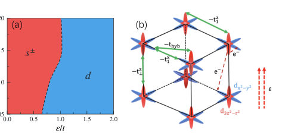
<figcaption class="paper-figure-caption"><b>Fig 1.</b> FIG. 1. (a) Phase diagram of the dominant pairing tendency in the (JH/U, ε) parameter plane at U/t = 3, ∆E/t = 0.8, and L = 8 and (b) schematic illustration of the bilayer two- orbital model. The dominant hopping processes include the intralayer dx2−y2 and d3z2−r2 hoppings, the sign-changing in-plane interorbital hybridization thyb, and the interlayer d3z2−r2 hopping tz ⊥. The layer potential difference ε mim- ics a perpendicular electric field.</figcaption>
</figure>
<figure class="paper-figure-card">
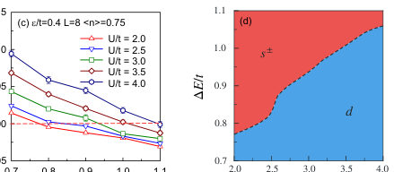
<figcaption class="paper-figure-caption"><b>Fig 2.</b> FIG. 3. Pairing competition as a function of Hubbard in- teraction and crystal-field splitting at ε/t = 0.4, JH = 0, L = 8, and ⟨n⟩= 0.75. (a) and (b) Pairing vertex contribu- tions Vd and Vs± versus ∆E/t for U/t = 2 and 3, respectively. (c) ∆V = Vd −Vs± for different U. The horizontal dashed line marks ∆V = 0. (d) Dominant pairing tendencies in the (U, ∆E) plane. Increasing U favors the d-wave channel rela- tive to the s± channel, whereas increasing ∆E makes the s±</figcaption>
</figure>
<figure class="paper-figure-card">
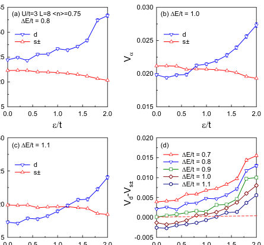
<figcaption class="paper-figure-caption"><b>Fig 3.</b> FIG. 2. Evolution of the pairing vertex contributions with the electric-field potential difference ε at U/t = 3, JH = 0, L = 8, and ⟨n⟩= 0.75. (a)–(c) Vd and Vs± for representative crystal-field splittings. (d) ∆V = Vd −Vs± for ∆E/t = 0.7– 1.1. Increasing ε systematically favors the d-wave channel rel- ative to s±, whereas increasing ∆E shifts the leading-pairing crossover to larger ε.</figcaption>
</figure>
<figure class="paper-figure-card">
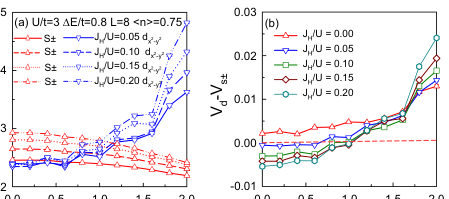
<figcaption class="paper-figure-caption"><b>Fig 4.</b> FIG. 4. Dependence of pairing competition on JH at U/t = 3, ∆E/t = 0.8, L = 8, and ⟨n⟩= 0.75. (a) Pairing vertex contributions Vd and Vs± versus ε/t for JH/U = 0.05, 0.10, 0.15, and 0.20. (b) ∆V = Vd −Vs± for several JH/U. The horizontal dashed line marks ∆V = 0. Increasing JH makes the s± channel relatively more competitive at weak ε, while increasing the relative strength of the d-wave channel at large ε.</figcaption>
</figure>
<figure class="paper-figure-card">
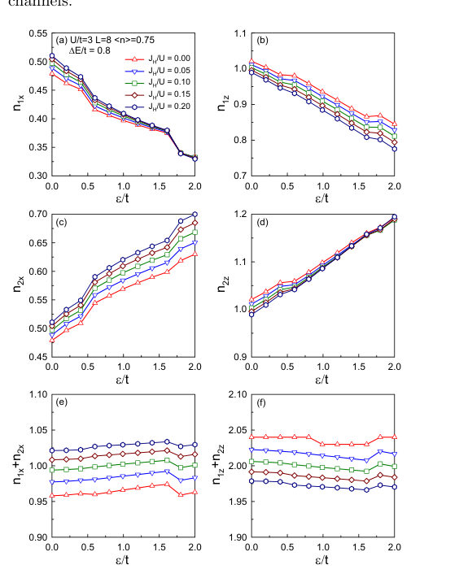
<figcaption class="paper-figure-caption"><b>Fig 5.</b> FIG. 5. Orbital occupations versus ε for different JH at U/t = 3, ∆E/t = 0.8, L = 8, and ⟨n⟩= 0.75. Panels (a)–(d) show n1x, n1z, n2x, and n2z, respectively, while panels (e) and (f) show n1x + n2x and n1z + n2z. Here, nℓα denotes the site- averaged, spin-summed occupation of orbital α = x, z in layer ℓ= 1, 2. Increasing ε redistributes charge from layer 1 to layer 2, while the total occupation of each orbital remains nearly unchanged. Increasing JH shifts charge from the z sector toward the x sector, reducing orbital polarization.</figcaption>
</figure>
</div>

<p><strong>Summary.</strong> This theoretical study uses Quantum Monte Carlo simulations on a bilayer Hubbard model to map the competition between $d$-wave and $s^{\pm}$ superconductivity in nickelates. The research demonstrates that external tuning parameters, such as layer polarization ($\epsilon$) and Hund's coupling ($J_H$), can drive crossovers in the dominant pairing symmetry. The findings establish a crucial link between charge redistribution, magnetic correlations, and the superconducting pairing tendency.</p>
<p><strong>Why it may be interesting.</strong> The explicit modeling of how external fields (electric field) and internal interactions ($J_H$) can tune the superconducting pairing symmetry in a strongly correlated material like nickelates is highly relevant to understanding unconventional superconductivity mechanisms.</p>
<details>
<summary>Detailed structure</summary>
<p><strong>Main problem.</strong> The paper investigates the competition between interlayer $s^{\pm}$ and intralayer $d$-wave pairing symmetries in bilayer nickelates, focusing on how this competition is tuned by an effective perpendicular electric field (layer polarization).</p>
<p><strong>Main result.</strong> Increasing layer polarization ($\epsilon$) generally shifts the pairing preference toward the $d$-wave channel, while Hund's coupling ($J_H$) influences the relative strength of $s^{\pm}$ and $d$-wave pairing depending on the bias.</p>
<p><strong>Method.</strong> The study employs ground-state Constrained-Path Quantum Monte Carlo (CPMC) simulations to treat electronic correlations beyond mean-field approximations.</p>
<p><strong>Model / system.</strong> The system is modeled using a two-orbital Hubbard model applied to bilayer nickelates, incorporating terms for hopping, onsite repulsion ($U$), Hund's coupling ($J_H$), crystal-field splitting ($\Delta E$), and a layer potential difference ($\epsilon$).</p>
<p><strong>Key observables.</strong> Pairing vertex contributions ($V_d$ and $V_{s\pm}$), orbital occupations ($n_{\ell\alpha}$), and the antiferromagnetic spin structure factor ($S_{zz}(M)$).</p>
<p><strong>Important parameters / regimes.</strong> Layer potential difference ($\epsilon$), onsite repulsion ($U$), Hund's coupling ($J_H$), and crystal-field splitting ($\Delta E$).</p>
<p><strong>Assumptions / limitations.</strong> The CPMC method is used, and the analysis notes that the pairing vertex contribution ($V_{\Gamma}$) is not strictly identified with the thermodynamic superconducting order parameter due to finite size effects.</p>
<p><strong>Figures summary.</strong> Figures illustrate the phase diagram of dominant pairing tendency in the $(J_H/U, \epsilon)$ plane, and show how various observables like $S_{zz}(M)$, $V_d$, and $V_{s\pm}$ respond to changes in $\epsilon$, $U$, and $J_H$.</p>
<p><strong>Paper structure.</strong> The paper systematically analyzes the effects of tuning parameters ($\epsilon, U, J_H, \Delta E$) on the pairing competition, linking changes in charge redistribution (orbital occupations) and magnetic correlations ($S_{zz}$) to the relative stability of $d$-wave versus $s^{\pm}$ pairing.</p>
</details>
<details>
<summary>Abstract</summary>
<p>Layer polarization provides a means of tuning the competition between interlayer and intralayer pairing in bilayer nickelates. Using ground-state constrained-path quantum Monte Carlo, we study interlayer $s^{\pm}$ and intralayer $d$ pairing in a bilayer two-orbital Hubbard model with a layer potential-energy difference $\varepsilon$ representing an effective perpendicular electric field. Within the parameter range studied, increasing $\varepsilon$ generally enhances the finite-size pairing vertex contribution $V_d$ and reduces $V_{s^{\pm}}$, shifting the relative pairing preference toward the $d$-wave channel. Increasing the onsite repulsion enhances both vertex contributions, more strongly in the $d$-wave channel, whereas increasing the crystal-field splitting reduces both and makes $s^{\pm}$ pairing relatively more competitive. Hund's coupling increases the relative competitiveness of $s^{\pm}$ pairing at weak bias, while enhancing the relative strength of $d$-wave pairing at large bias. The bias primarily redistributes charge between layers within each orbital sector, accompanied by an increase in the antiferromagnetic spin structure factor. Hund's coupling also enhances local interorbital parallel-spin correlations. These observations suggest possible connections between charge redistribution, magnetic correlations, and pairing competition, offering insight into how layer polarization and multiorbital interactions influence the relative pairing tendencies in the bilayer nickelate model.</p>
</details>
<p><sub><a href="#top">↑ back to top</a></sub></p>

<p><a id="paper-2610.20491"></a></p>
<h3 id="testing-replica-symmetry-breaking-in-the-three-dimensional-edwards-anderson-model-by-using-vanishing-fields"><a href="http://arxiv.org/abs/2610.20491v1">Testing Replica Symmetry Breaking in the three-dimensional Edwards-Anderson model by using vanishing fields</a></h3>
<p><strong>Authors:</strong> Miguel Aguilar-Janita, Silvio Franz, Victor Martin-Mayor, Javier Moreno-Gordo, Giorgio Parisi, Federico Ricci-Tersenghi, Juan J. Ruiz-Lorenzo<br>
<strong>Type:</strong> both · <strong>Category:</strong> disordered systems and neural networks · <strong>PDF:</strong> <a href="https://arxiv.org/pdf/2610.20491v1">https://arxiv.org/pdf/2610.20491v1</a><br>
<strong>Analysis basis:</strong> full PDF text, analyzed in chunks
<strong>Topic relevance:</strong> <code>Keldysh / 2PI / non-Gaussian methods</code> <strong>2/5</strong> · <code>analog quantum simulation</code> <strong>1/5</strong></p>
<div class="figure-strip-hint">↔ Scroll figures horizontally</div>
<div class="paper-figures-scroll">
<figure class="paper-figure-card">
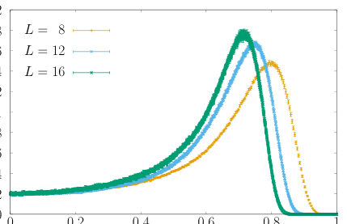
<figcaption class="paper-figure-caption"><b>Fig 1.</b> FIG. 1. Shift of the probability P(|q|) for different sizes of the system L in three-dimensional EA model at T = 0.73Tc and h = 0.</figcaption>
</figure>
<figure class="paper-figure-card">
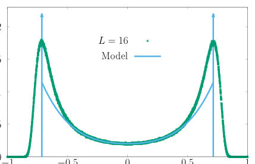
<figcaption class="paper-figure-caption"><b>Fig 2.</b> FIG. 2. Scheme of the modeling of P(q) computed in numer- ical simulations at zero magnetic field at T = 0.73Tc.</figcaption>
</figure>
<figure class="paper-figure-card">
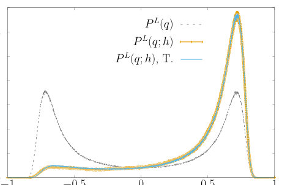
<figcaption class="paper-figure-caption"><b>Fig 3.</b> FIG. 3. The functions P L(q) and P L(q; h) as a function of q at T = 0.73Tc for h = 3 for the largest lattice size simulated, L = 16. The agreement between the numerical P L(q; h) and its theoretical prediction obtained from the ultrametric tree (denoted by T.) is very good. The largest deviation occurs in the negative peak, which is a finite-size effect. The theoret- ical curve has been obtained as the product of RL(q; h) and the numerical zero-field probability distribution of overlaps, P L(q) [see Eq. (3)].</figcaption>
</figure>
<figure class="paper-figure-card">
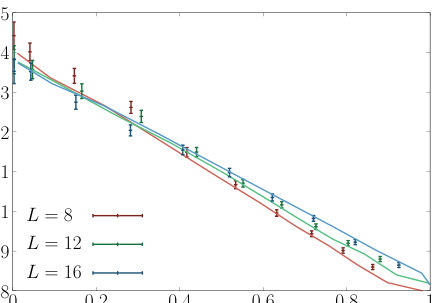
<figcaption class="paper-figure-caption"><b>Fig 4.</b> FIG. 5. The ratio RL C(q; h) as a function of q2/q2 EA(L) at T = 0.73Tc for h = 3. Lines correspond to the theoretical prediction from the ultrametric tree, while points with errors correspond to the results from numerical simulations.</figcaption>
</figure>
<figure class="paper-figure-card">
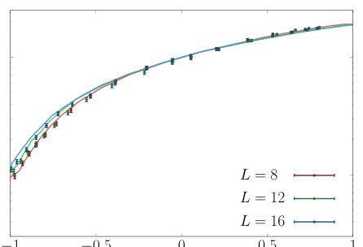
<figcaption class="paper-figure-caption"><b>Fig 5.</b> FIG. 6. The ratio RL(q; h) as a function of q/qEA(L) at T = 0.73Tc for h = 3. Lines show the theoretical prediction from the ultrametric tree, while points with errors show results from numerical simulations.</figcaption>
</figure>
</div>

<p><strong>Summary.</strong> This work rigorously tests Replica Symmetry Breaking theory for the 3D Edwards-Anderson spin glass model by examining how the overlap distribution changes under a vanishing magnetic field. The authors combine numerical simulations with advanced analytical tools derived from the Bolthausen-Sznitman process. The strong quantitative agreement between theory and simulation provides significant evidence supporting the applicability of RSB theory to this physical system.</p>
<p><strong>Why it may be interesting.</strong> While focused on spin glasses, the rigorous application of advanced statistical mechanics techniques (like RSB and coalescent processes) to characterize complex energy landscapes is highly relevant to understanding the dynamics of disordered quantum systems.</p>
<details>
<summary>Detailed structure</summary>
<p><strong>Main problem.</strong> The paper tests the predictions of Replica Symmetry Breaking (RSB) theory for spin glasses in the three-dimensional Edwards-Anderson model.</p>
<p><strong>Main result.</strong> The mixed numerical-analytical approach shows very good quantitative agreement with direct numerical simulations, providing strong support for RSB theory describing the 3D spin glass at low temperatures.</p>
<p><strong>Method.</strong> A mixed approach combining numerical calculation of the zero-field overlap distribution $P(q)$ with analytical computation using the Bolthausen-Sznitman coalescent process to predict behavior in a vanishing magnetic field.</p>
<p><strong>Model / system.</strong> The system is the three-dimensional Edwards-Anderson spin glass model, governed by an Ising Hamiltonian with random couplings $J_{ij}$. The analysis focuses on the overlap distribution $P(q)$ under the influence of a vanishing magnetic field $h \propto 1/\sqrt{N}$.</p>
<p><strong>Key observables.</strong> The probability density function of the overlap, $P(q)$, and the statistics of states in the presence of a vanishing field, $P_L(q; h)$ and $P_L^C(q; h)$.</p>
<p><strong>Important parameters / regimes.</strong> System size $L$ (e.g., 8, 12, 16), temperature relative to $T_c$, and the vanishing field strength $h$.</p>
<p><strong>Assumptions / limitations.</strong> The core assumption is the validity of RSB theory, which predicts that the chaotic behavior depends only on the zero-field overlap distribution $P(q)$.</p>
<p><strong>Figures summary.</strong> Figures compare the theoretical predictions (derived from ultrametric trees and ratios $R_L, R_L^C$) against numerical simulations for various field strengths and system sizes, showing agreement in the weak-field regime.</p>
<p><strong>Paper structure.</strong> The paper details the model and simulation methods, presents the mixed numerical-analytical predictions based on RSB theory, and finally compares these predictions quantitatively against direct Monte Carlo simulations.</p>
</details>
<details>
<summary>Abstract</summary>
<p>Replica Symmetry Breaking (RSB) theory for spin glasses, which is exact in infinite dimensions, provides detailed predictions for the behavior of these systems. One of these predictions is that vanishing magnetic fields induce chaotic behavior. Here, vanishing has a precise meaning: we refer to an externally applied magnetic field with intensity scaling as $1/\sqrt{N}$, where $N$ is the number of spins in the system. RSB predicts that this chaotic behavior depends only on the probability density function of the overlap, $P(q)$, as computed at zero field.   We proceed to test the RSB prediction in the 3D Edwards-Anderson model, by first computing the $P(q)$ numerically in the absence of a magnetic field. We then use this function as input to analytically compute the statistics of the states in the regime of a vanishing magnetic field, using a representation based on the Bolthausen-Sznitman coalescent process (which is exact for the mean-field Sherrington-Kirkpatrick model). This mixed numerical-analytical approach allows us to determine the prediction of RSB for the overlap distribution function measured in the presence of a small vanishing field, as well as the increase in chaoticity as the field strength grows.   The above RSB predictions are quantitatively compared with the outcome of numerical simulations of the three-dimensional Edwards-Anderson in the presence of a small vanishing field, finding very good agreement. This agreement provides strong support for the idea that three-dimensional spin glass at zero magnetic field and low temperature is well described by RSB theory.</p>
</details>
<p><sub><a href="#top">↑ back to top</a></sub></p>

<p><a id="paper-2610.19073"></a></p>
<h3 id="a-modular-quantum-computer-based-on-cornucopia-codes"><a href="http://arxiv.org/abs/2610.19073v1">A modular quantum computer based on Cornucopia codes</a></h3>
<p><strong>Authors:</strong> Zhide Lu, Weikang Li, Yinghao Ma, Hanyu Yan, Bingrun Wang, Yixuan Ma, Zheng-Zhi Sun, Dong-Ling Deng<br>
<strong>Type:</strong> theory · <strong>Category:</strong> quantum information and computing · <strong>PDF:</strong> <a href="https://arxiv.org/pdf/2610.19073v1">https://arxiv.org/pdf/2610.19073v1</a><br>
<strong>Analysis basis:</strong> full PDF text, analyzed in chunks
<strong>Topic relevance:</strong> <code>QC/QI experiment</code> <strong>2/5</strong></p>
<div class="figure-strip-hint">↔ Scroll figures horizontally</div>
<div class="paper-figures-scroll">
<figure class="paper-figure-card">
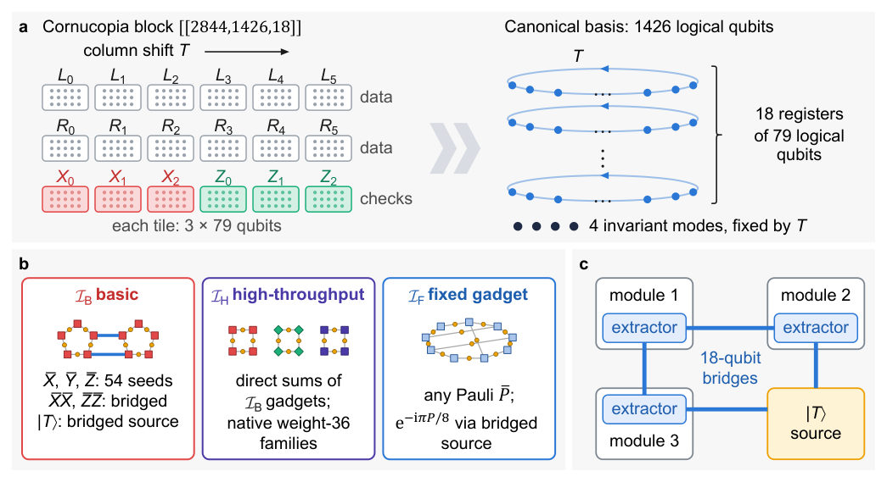
<figcaption class="paper-figure-caption"><b>Fig 1.</b> Fig. 1. A modular quantum computer based on Cornucopia codes. a, One [[2844, 1426, 18]] Cornucopia block [37]: twelve data tiles Lj, Rj and six check tiles, each a 3 × 79 array; every check acts on one qubit in each data tile, located by a row permutation and a column translation. The column translation T of the data tiles is a code automorphism; in our canonical logical basis it cyclically shifts each of the 18 registers of 79 logical qubits and fixes the four invariant modes, which together make up the 1,426 logical qubits. b, Three instruction sets: IB is generated by 54 reusable seed gadgets, their translates and matching bridges; IH executes compatible IB gadgets in parallel as direct...</figcaption>
</figure>
<figure class="paper-figure-card">
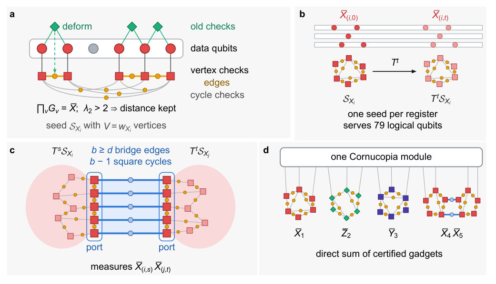
<figcaption class="paper-figure-caption"><b>Fig 2.</b> Fig. 2. Surgery toolkit. a, Schematic of a seed gadget SXi measuring X: one vertex check (square) is attached to each data qubit in the support of the target (red), old checks (diamonds) that anticommute locally with the target are deformed onto skeleton edges (orange; every edge is an ancilla data qubit), and the product of all vertex checks equals X. Expansion edges raise the spectral gap of the gadget graph to λ2 &gt; 2, which keeps the code distance, and cycle checks on a complete cycle basis ensure that the gadget encodes no additional logical qubits. b, Translation covariance: T t maps the seed gadget for X(i,0) to one for X(i,t), so that one seed per register serves its 79 logical...</figcaption>
</figure>
<figure class="paper-figure-card">
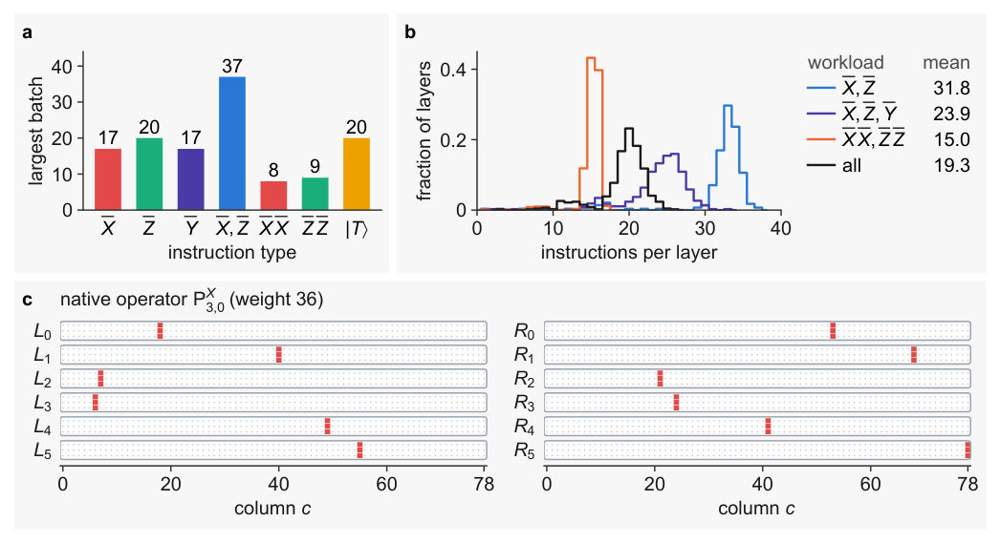
<figcaption class="paper-figure-caption"><b>Fig 3.</b> Fig. 3. High-throughput instructions. a, Largest verified parallel batch for each instruction type, that is, the number of instructions executed in a single merged code, including mixed single-qubit X and Z measurements on distinct logical qubits and simultaneous magic- state injections (|T⟩). b, Distribution of the number of instructions per layer when random workloads of 3,000 instructions are scheduled into compatible parallel layers, for single-qubit X and Z measurements, single-qubit measurements including Y , bridged products XX and ZZ, and all five basic types mixed (all); for each type, the histogram combines three independent workloads, and the legend gives their mean number of...</figcaption>
</figure>
<figure class="paper-figure-card">
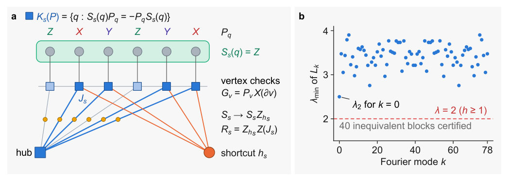
<figcaption class="paper-figure-caption"><b>Fig 4.</b> Fig. 4. Fixed extractor. a, Local rule around one old check Ss, shown on six of its twelve qubits. Its hub is joined to the data vertices of its support by star edges, each carrying an ancilla qubit (orange dots), and every data vertex carries the vertex check Gv = PvX(∂v). For a target P, the vertices in Ks(P) (dark blue), at which the local factor Pq anticommutes with Ss, are joined by the shortcut hyperedge hs; the old check becomes SsZhs, and Rs = ZhsZ(Js) is the cycle formed by the shortcut and the star edges Js from the hub to these vertices. b, Smallest eigenvalue of each Fourier block Lk of the extractor Laplacian, excluding the zero eigenvalue of L0. Blocks k and 79 −k are complex...</figcaption>
</figure>
<figure class="paper-figure-card">
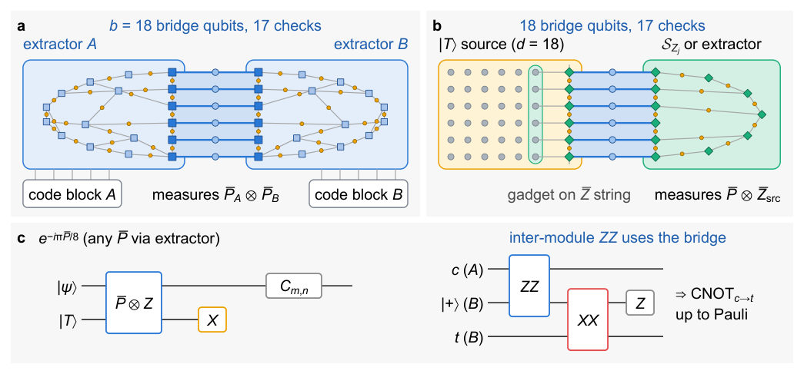
<figcaption class="paper-figure-caption"><b>Fig 5.</b> Fig. 5. Connecting modules and magic-state sources. a, The extractors of two Cornucopia modules are joined by a matching bridge of 18 ancilla qubits (light blue) between fixed ports, and 17 square checks complete the cycle basis. For any pair of targets the merged code measures P A ⊗P B, satisfies wmax ≤16 and ∆max ≤14, and preserves the distance. b, A distance-18 surface-code patch holding a |T⟩state carries an 18-vertex gadget on its Z string, which is joined by the bridge to a seed gadget SZj or to the extractor, so that the merged code measures</figcaption>
</figure>
</div>

<p><strong>Summary.</strong> This paper proposes the Cornucopia architecture, a modular design for fault-tolerant quantum computing that merges the high storage density of ultra-high-rate quantum error correcting codes with the capability for universal logical operations. By introducing specialized, reusable gadgets and connection bridges, the authors demonstrate a pathway to achieving low-overhead, scalable quantum computation. This work is significant for advancing the practical realization of large-scale quantum processors.</p>
<p><strong>Why it may be interesting.</strong> While focused on quantum computation, the rigorous resource accounting and comparison of overheads (e.g., physical qubits per logical qubit) provide quantitative benchmarks relevant to scaling any complex quantum hardware platform.</p>
<details>
<summary>Detailed structure</summary>
<p><strong>Main problem.</strong> The challenge is designing a fault-tolerant quantum computer architecture that maintains the high resource efficiency of ultra-high-rate quantum error correction codes while supporting universal, low-overhead logical operations.</p>
<p><strong>Main result.</strong> The proposed Cornucopia architecture successfully integrates high-rate memory with universal logical computation by implementing three instruction sets (basic, high-throughput, fixed-extractor) with manageable overhead.</p>
<p><strong>Method.</strong> The authors utilize a modular design based on the Cornucopia code, employing 'code surgery' and symmetry-adapted gadgets to perform logical operations while preserving the code distance.</p>
<p><strong>Model / system.</strong> The system is a modular quantum computer built from interconnected code blocks based on the [[2844,1426,18]] Cornucopia code. Each block acts as a universal logical processor, connected by specialized bridges.</p>
<p><strong>Key observables.</strong> Logical error rate ($2.6 	imes 10^{-16}$ per logical qubit per cycle), physical qubits per logical qubit (4.1 for basic set vs. 3.0 for memory alone), and code distance ($d=18$).</p>
<p><strong>Important parameters / regimes.</strong> Encoding rate (ultra-high, &gt; 1/2), number of logical qubits per block (1,426), and the size of the connecting bridges (18 qubits).</p>
<p><strong>Assumptions / limitations.</strong> The construction relies on the ability to build gadgets that provably preserve the code distance and the assumption that the overhead of the basic instruction set is acceptable compared to the memory advantage.</p>
<p><strong>Figures summary.</strong> Figures illustrate the modular structure, the three instruction sets (basic, high-throughput, fixed-extractor), and the detailed mechanisms for performing logical operations like CNOT gates across module bridges.</p>
<p><strong>Paper structure.</strong> The paper progresses by first introducing the Cornucopia architecture to solve the overhead problem, detailing the three instruction sets and the use of reusable gadgets, then focusing on inter-module operations (bridges, CNOT), and finally comparing the resource scaling against alternative architectures like the bicycle code.</p>
</details>
<details>
<summary>Abstract</summary>
<p>Ultra-high-rate quantum error correction codes can store many logical qubits in a single code block with few physical qubits. A fault-tolerant quantum computer, however, also requires a universal set of logical operations on individually addressable logical qubits, and the ancilla overhead of these operations may erode the advantage of the high encoding rate. Here, we propose the Cornucopia architecture, in which a universal set of logical operations is implemented at low overhead for the Cornucopia codes. In particular, we focus on the [[2844,1426,18]] Cornucopia code as an example and introduce a modular quantum computer built from such code blocks connected by bridges. Each block stores 1,426 logical qubits and serves as a universal logical processor. Exploiting the code's translation symmetry, we construct a family of reusable gadgets that individually address 1,422 logical qubits within each block. These gadgets support three universal logical instruction sets: basic, high-throughput and fixed-extractor. Excluding magic-state factories, a module with sufficient workspace to execute any instruction in the basic set requires an average of 4.1 physical qubits per logical qubit, compared with 3.0 for memory alone. The architecture thus preserves the resource advantage of ultra-high-rate quantum memory while enabling universal logical computation, providing a route towards low-overhead fault-tolerant quantum computers.</p>
</details>
<p><sub><a href="#top">↑ back to top</a></sub></p>

<p><a id="paper-2610.19004"></a></p>
<h3 id="anomalies-higher-symmetries-and-homotopy-theory-i-crossed-precosheaves-and-a-nonabelian-cech-construction"><a href="http://arxiv.org/abs/2610.19004v1">Anomalies, higher symmetries, and homotopy theory I: crossed precosheaves and a nonabelian Cech construction</a></h3>
<p><strong>Authors:</strong> Anton Kapustin, Shixiong Xu<br>
<strong>Type:</strong> theory · <strong>Category:</strong> strongly correlated electrons · <strong>PDF:</strong> <a href="https://arxiv.org/pdf/2610.19004v1">https://arxiv.org/pdf/2610.19004v1</a><br>
<strong>Analysis basis:</strong> full PDF text, analyzed in chunks
<strong>Topic relevance:</strong> <code>analog quantum simulation</code> <strong>2/5</strong></p>
<div class="figure-strip-hint">↔ Scroll figures horizontally</div>
<div class="paper-figures-scroll">
<figure class="paper-figure-card">
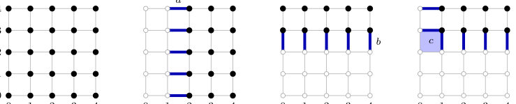
<figcaption class="paper-figure-caption"><b>Fig 1.</b> Figure 1: The four kinds of orthant steps in bidegree (4, 4); the horizontal coordinate is direction 1, the vertical one direction 2. A filled dot marks a vertex carrying the element of M∅indicated below, a thick edge an arrow carrying an element of M1 or M2, and the shaded cell the one square carrying the element of M12; open dots, thin edges, and unshaded cells carry 0. All filled vertices in one panel carry the same element: x in (a), µ1a in (b), µ2b in (c), µ1µ2c in (d); likewise all thick horizontal edges in (d) carry µ2c and all thick vertical edges carry µ1c. The nonzero elements are supported on the orthant {u ≥k1, v ≥k2} together with the edges and the cell crossing into it.</figcaption>
</figure>
<figure class="paper-figure-card">
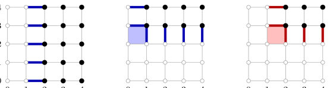
<figcaption class="paper-figure-caption"><b>Fig 2.</b> Figure 2: The commutator of two orthant steps, drawn with the conventions of Figure 1. The commutator (c) is the orthant step u(2,3)  h(a, b)  with corner (2, 3) = (2, 0) ∨(1, 3): its filled vertices are exactly the vertices filled in both (a) and (b), and its cell is the one crossing both thresholds.</figcaption>
</figure>
<figure class="paper-figure-card">
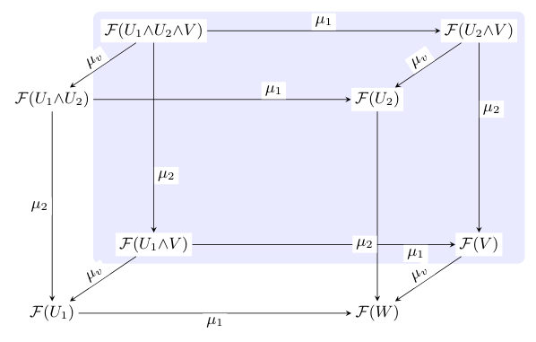
<figcaption class="paper-figure-caption"><b>Fig 3.</b> Figure 3: The crossed 3-cube ˇCF(ξ+) split in the v-direction. The shaded face is ˇCF(ξ|V ), the front face is ˇCF(ξ), and the whole cube is ˇCF(ξ+).</figcaption>
</figure>
</div>

<p><strong>Summary.</strong> This paper introduces a sophisticated homotopy-theoretic framework to define 't Hooft anomalies and higher symmetries in quantum systems. It uses crossed precosheaves to build a $\check{	ext{C}}$ech-Loday classifying space that captures the full structure of localized symmetries. This provides a powerful, general tool for classifying topological invariants in condensed matter and quantum field theory.</p>
<p><strong>Why it may be interesting.</strong> The framework provides powerful topological tools to classify robust, non-local symmetries in quantum many-body systems, which is crucial for understanding topological phases of matter relevant to correlated electron physics.</p>
<details>
<summary>Detailed structure</summary>
<p><strong>Main problem.</strong> To develop a rigorous, homotopy-theoretic definition of 't Hooft anomalies and higher symmetries in quantum field theories and lattice models, moving beyond group-theoretic descriptions.</p>
<p><strong>Main result.</strong> The authors construct the $\check{	ext{C}}$ech-Loday classifying space, $\check{BF}(\xi)$, whose structure encodes higher symmetry groups and whose non-triviality detects anomalies that obstruct gauging.</p>
<p><strong>Method.</strong> The method involves using crossed precosheaves of groups attached to spatial regions and constructing the associated $\check{	ext{C}}$ech-Loday classifying complex, which is a pro-object in the homotopy category.</p>
<p><strong>Model / system.</strong> The theory is applied to general quantum field theories and quantum lattice models, with specific examples given for quantum spin systems in one and two dimensions, and quantum cellular automata.</p>
<p><strong>Key observables.</strong> The anomaly is detected by the homotopy class of the map $\kappa_F(\xi) \circ B
ho: BG 	o \check{BF}(\xi)$; higher symmetries are encoded in the homotopy groups of $\check{BF}(\xi)$.</p>
<p><strong>Important parameters / regimes.</strong> The structure depends on the crossed precosheaf $\xi$, which captures localized symmetries and their non-abelian commutation relations.</p>
<p><strong>Assumptions / limitations.</strong> The construction relies on the structure of crossed precosheaves, which are necessary because physical symmetries often violate the simple multiplicative partition of unity assumption.</p>
<p><strong>Paper structure.</strong> The paper develops the framework by defining the crossed precosheaf, constructing the $\check{	ext{C}}$ech-Loday classifying space, and then applying this machinery to derive known invariants (like the Else-Nayak index) for specific physical models.</p>
</details>
<details>
<summary>Abstract</summary>
<p>Symmetries of a quantum field theory or a quantum lattice model are expected to be described not by a group but by a homotopy type, whose homotopy groups are the higher symmetry groups and whose Postnikov invariants encode 't Hooft anomalies. We propose a homotopy-theoretic definition of 't Hooft anomalies based on the structure of localized symmetries in the operator-algebraic approach. The input is a crossed precosheaf: a collection of groups attached to regions of space, equipped with pairings recording that the commutator of two transformations localized in two regions is localized in their intersection. To a crossed precosheaf and a finite family of regions we attach a pointed connected homotopy type, the Cech-Loday classifying space. As the family of regions ranges over finite covers of space, the classifying spaces form a pro-object in the homotopy category. There is a canonical map from the ordinary classifying space of the symmetry group to this pro-type. Composing this map with a group action gives an anomaly whose nontriviality obstructs gauging. In favorable cases, the Cech-Loday space is essentially independent of the cover. In such cases, the homotopy fiber of the canonical map is a candidate for the classifying space of the higher group of symmetries. We give examples of crossed precosheaves arising from gauge transformations in continuum field theory and from quantum cellular automata and finite-depth circuits. For quantum spin systems in one and two dimensions, our construction recovers the Else-Nayak index and its generalizations to two dimensions.</p>
</details>
<p><sub><a href="#top">↑ back to top</a></sub></p>

<p><a id="paper-2610.20522"></a></p>
<h3 id="anyons-at-impurities-fractional-charge-measurement-and-wrong-sign-binding"><a href="http://arxiv.org/abs/2610.20522v1">Anyons at impurities: Fractional charge measurement and "wrong sign" binding</a></h3>
<p><strong>Authors:</strong> Haydn S. Adlong, Arthur Christianen, Atac Imamoglu, Glenn Wagner<br>
<strong>Type:</strong> theory · <strong>Category:</strong> strongly correlated electrons · <strong>PDF:</strong> <a href="https://arxiv.org/pdf/2610.20522v1">https://arxiv.org/pdf/2610.20522v1</a><br>
<strong>Analysis basis:</strong> full PDF text, analyzed in chunks
<strong>Topic relevance:</strong> <code>quantum measurements</code> <strong>2/5</strong></p>
<div class="figure-strip-hint">↔ Scroll figures horizontally</div>
<div class="paper-figures-scroll">
<figure class="paper-figure-card">
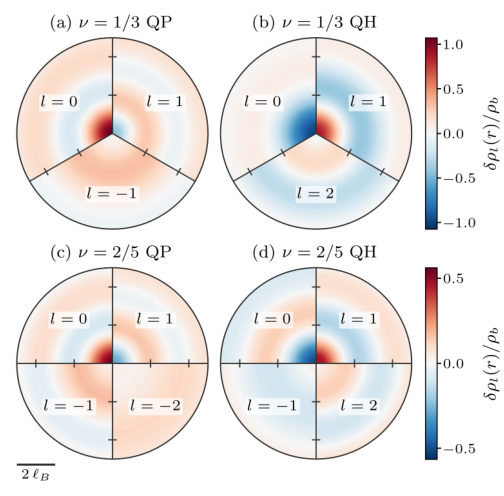
<figcaption class="paper-figure-caption"><b>Fig 1.</b> FIG. 1. Density profiles for quasiholes and quasiparti- cles. Relative density deviation δρl(r) = [ρs,l(r) −ρb]/ρb at ν = 1/3 and 2/5, computed by Monte Carlo sampling of Jain wavefunctions, with bulk density ρb = ν/(2πℓ2 B), where ℓB is the magnetic length. The quasiparticle and quasihole panels contain Ne = 75 and 73 electrons at ν = 1/3, and Ne = 91 and 89 at ν = 2/5, respectively. Each wedge shows the profile for an orbital label l of the composite-fermion orbital added to create a quasiparticle or removed to create a quasihole.</figcaption>
</figure>
<figure class="paper-figure-card">
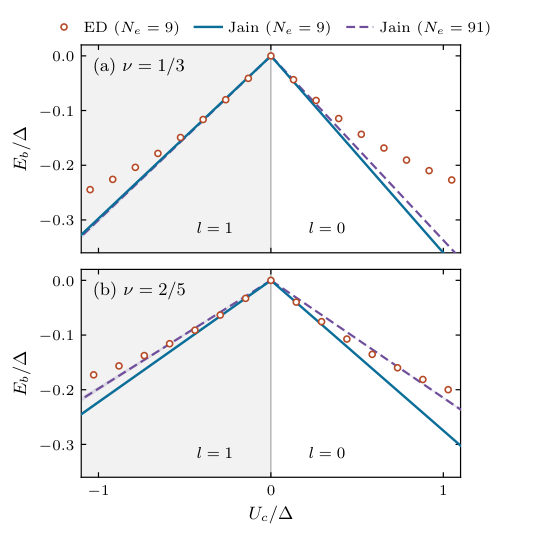
<figcaption class="paper-figure-caption"><b>Fig 2.</b> FIG. 2. Contact-impurity quasihole binding. Binding energy for (a) ν = 1/3 and (b) ν = 2/5 quasiholes as a func- tion of the projected contact-impurity strength Uc. Open circles show ED for Ne = 9; solid and dashed lines show Jain Monte Carlo estimates for Ne = 9 and Ne = 91, respectively. For Ne = 9, the Jain contact slopes subtract the north-pole orbital occupation of the corresponding incompressible ED parent; for Ne = 91, they use the shift-corrected reference density ρref = ν(Nϕ + S)/A on the quasihole sphere. The dashed line for ν = 1/3 and Uc &gt; 0 uses the exact Laughlin quasihole contact node. In-panel labels indicate the preferred Jain orbital l.</figcaption>
</figure>
<figure class="paper-figure-card">
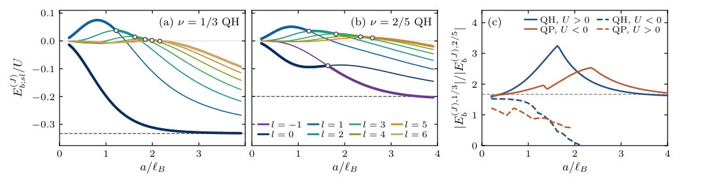
<figcaption class="paper-figure-caption"><b>Fig 3.</b> FIG. 3. Impurity overlap of Jain anyons. (a,b) Gaussian-impurity binding energies E(J) b;sl/U for quasiholes at ν = 1/3 and 2/5. (c) Ratio of the 1/3 and 2/5 binding-energy magnitudes for quasiholes (blue) and quasiparticles (orange). Dark curves use the usual impurity sign (U &gt; 0 for quasiholes and U &lt; 0 for quasiparticles); dashed curves use the opposite sign. The wrong-sign quasiparticle ratio is truncated when the extremal 2/5 channel reaches the edge of the sampled orbital ladder, beyond which its envelope is unresolved.</figcaption>
</figure>
<figure class="paper-figure-card">
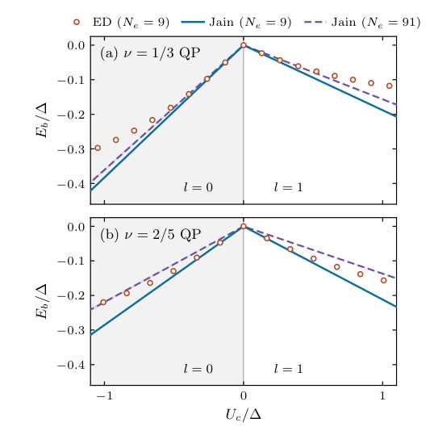
<figcaption class="paper-figure-caption"><b>Fig 4.</b> FIG. 4. Quasiparticle binding to a contact impurity. Binding energy at (a) ν = 1/3 and (b) ν = 2/5, with each axis scaled by that filling’s many-body gap ∆ν. Open circles are ED results for Ne = 9; solid lines are matched-size Jain estimates; dashed lines use Ne = 91 Jain states.</figcaption>
</figure>
<figure class="paper-figure-card">
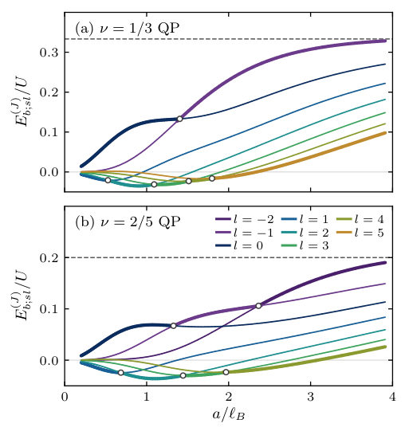
<figcaption class="paper-figure-caption"><b>Fig 5.</b> FIG. 5. Quasiparticle binding across impurity ranges. Gaussian impurity binding energies E(J) b;sl/U for quasiparticles at (a) ν = 1/3 and (b) ν = 2/5, using the same reference density as in Fig. 3. The curves show the energy of individual orbitals; heavy segments follow the extremal channel, and open circles mark changes in the preferred orbital channel.</figcaption>
</figure>
</div>

<p><strong>Summary.</strong> This theoretical work investigates how impurities bind to anyons in fractional quantum Hall states, using the LLL model and Jain wavefunctions. The authors find that while initial measurements might suggest charge quantization, the binding energy is sensitive to the anyon's internal density structure. They also predict a novel 'wrong-sign' binding mechanism, offering a tool to probe the internal density profile of these exotic quasiparticles.</p>
<p><strong>Why it may be interesting.</strong> The study provides a detailed theoretical framework for interpreting spectroscopic measurements in strongly correlated electron systems, linking measurable quantities (binding energy) to fundamental properties (charge vs. density structure).</p>
<details>
<summary>Detailed structure</summary>
<p><strong>Main problem.</strong> To determine whether impurity binding energy measurements of anyons in fractional quantum Hall systems probe the anyon's fractional charge or its internal density structure.</p>
<p><strong>Main result.</strong> The binding energy measurement generally probes the anyon's spatial structure, not just its total charge, and the study reveals the existence of 'wrong-sign' binding mechanisms.</p>
<p><strong>Method.</strong> The authors use the Lowest-Landau-Level model, employing Exact Diagonalization and Jain wavefunctions to calculate impurity-induced binding energies.</p>
<p><strong>Model / system.</strong> The system is fractional quantum Hall matter, specifically modeled using Jain states on a Haldane sphere, investigating the interaction between anyons (quasiholes/quasiparticles) and a localized impurity potential.</p>
<p><strong>Key observables.</strong> Anyon-impurity binding energy ratio ($
u=-2/3$ vs $-3/5$), density profiles ($\delta
ho_{s,l}(r)$), and contact depletion ($D_{s,l=1}^{n,p}$).</p>
<p><strong>Important parameters / regimes.</strong> Filling fractions ($
u=-2/3, -3/5$), impurity coupling strength ($U$), and potential range (contact limit vs. intermediate range).</p>
<p><strong>Assumptions / limitations.</strong> The model neglects Chern-band geometry and Landau-level mixing; calculations often rely on the Jain–Kamilla projection approximation.</p>
<p><strong>Figures summary.</strong> Figures illustrate density profiles of QHs and QPs at the impurity location and show binding energies versus impurity strength for different filling fractions.</p>
<p><strong>Paper structure.</strong> The paper progresses from analyzing initial experimental observations to developing a theoretical model using LLL and Jain states, calculating binding energies via ED and algebraic methods, and finally identifying the physical implications of the measured energy ratios and density responses.</p>
</details>
<details>
<summary>Abstract</summary>
<p>Recent photoluminescence experiments in twisted MoTe$_2$ have reported signatures of anyons binding to trapped trions. The measured binding energies near the fractional Chern insulators at fillings of $ν=-2/3$ and $-3/5$ have a ratio close to the fractional-charge ratio $5/3$, even though such scaling is not generally guaranteed for the expected short-range trion-anyon interaction. We model the trapped trion as a fixed impurity, and investigate anyon-impurity binding using a lowest-Landau-level model with exact diagonalization and Jain wavefunctions. Surprisingly, we find that the anyon-impurity binding energy ratio between $ν=-2/3$ and $-3/5$ is close to $5/3$ for either short- or long-ranged impurity-electron interactions. However, the ratio departs strongly from the charge ratio at intermediate ranges or different Jain states. Remarkably, we also uncover "wrong-sign" binding, whereby both quasiholes and quasiparticles can bind to either sign of a short-range impurity potential by selecting orbital channels with favorable local density oscillations. Our findings show that localized excitons or trions can be used to probe the internal density profile of anyons.</p>
</details>
<p><sub><a href="#top">↑ back to top</a></sub></p>

<p><a id="paper-2610.20198"></a></p>
<h3 id="geometric-resource-bounds-and-permutation-averaged-success-probabilities-for-the-wzp-algorithm"><a href="http://arxiv.org/abs/2610.20198v1">Geometric-resource bounds and permutation-averaged success probabilities for the WZP algorithm</a></h3>
<p><strong>Authors:</strong> Linlin Ye, Linmao Wang, Zhaoqi Wu, Shao-Ming Fei<br>
<strong>Type:</strong> theory · <strong>Category:</strong> quantum information and computing · <strong>PDF:</strong> <a href="https://arxiv.org/pdf/2610.20198v1">https://arxiv.org/pdf/2610.20198v1</a><br>
<strong>Analysis basis:</strong> full PDF text, analyzed in chunks
<strong>Topic relevance:</strong> <code>quantum measurements</code> <strong>2/5</strong></p>
<div class="figure-strip-hint">↔ Scroll figures horizontally</div>
<div class="paper-figures-scroll">
<figure class="paper-figure-card">
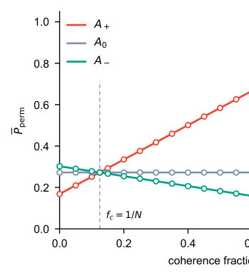
<figcaption class="paper-figure-caption"><b>Fig 1.</b> Figure 1: Permutation-averaged success probability versus coherence fraction fc for the three matrices in Example 1. The red, gray-blue and green solid curves correspond to P (+) perm, P (0) perm and P (−) perm, respectively, and the open circles denote the corresponding numerical values.</figcaption>
</figure>
<figure class="paper-figure-card">
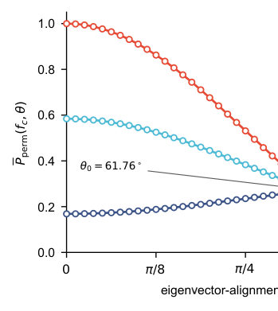
<figcaption class="paper-figure-caption"><b>Fig 2.</b> Figure 2: Permutation-averaged success probability versus eigenvector-alignment angle θ. The blue, cyan and red solid curves denote the analytical values for fc = 0, 1/2 and 1, respectively, and the open circles denote the corresponding numerical values.</figcaption>
</figure>
<figure class="paper-figure-card">
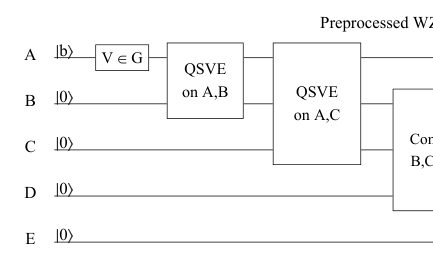
<figcaption class="paper-figure-caption"><b>Fig 3.</b> Figure 3: Quantum circuit for the preprocessed WZP algorithm.</figcaption>
</figure>
</div>

<p><strong>Summary.</strong> This paper rigorously analyzes the success probability of the WZP algorithm when applied to complex Hermitian linear systems. By using a resource-theoretic framework, the authors derive bounds connecting the maximal success probability to geometric measures like entanglement and coherence. This provides a unified, geometric perspective on the limitations and performance of quantum algorithms.</p>
<p><strong>Why it may be interesting.</strong> It provides a deep theoretical link between the performance of quantum algorithms (like solving linear systems) and fundamental geometric resource quantities (coherence, entanglement) in quantum information theory.</p>
<details>
<summary>Detailed structure</summary>
<p><strong>Main problem.</strong> The paper extends the analysis of the WZP algorithm success probability from real to complex Hermitian linear systems and derives resource-theoretic bounds on this probability.</p>
<p><strong>Main result.</strong> It establishes connections between the maximal success probability and geometric entanglement, coherence, and imaginarity, and shows that the averaged success probability is an affine function of the coherence fraction.</p>
<p><strong>Method.</strong> The analysis uses resource-theoretic methods, expressing success probability as an expectation value of a positive operator, and employs geometric measures to derive upper and lower bounds.</p>
<p><strong>Model / system.</strong> The core model is solving complex Hermitian linear systems of equations, $A|\mathbf{x}
angle = |\mathbf{b}
angle$, where the success probability is analyzed using an idealized spectral success operator $M$.</p>
<p><strong>Key observables.</strong> Success probability ($P_0$), Geometric coherence ($C_g$), Geometric entanglement ($E_g$), and Geometric imaginarity ($I_g$).</p>
<p><strong>Important parameters / regimes.</strong> Coherence fraction, spectral eigenvalues ($\omega_1, \omega_2$), and the structure of the input state $|\mathbf{b}
angle$ (e.g., separable, incoherent, or real pure states).</p>
<p><strong>Assumptions / limitations.</strong> The analysis relies on expressing the success probability as an expectation value of a positive operator, and some results assume non-degenerate leading eigenvalues.</p>
<p><strong>Paper structure.</strong> The paper reviews the WZP algorithm and geometric measures, modifies the algorithm for complex Hermitian systems, derives resource-theoretic bounds, studies permutation averaging, and investigates constrained preprocessing.</p>
</details>
<details>
<summary>Abstract</summary>
<p>Solving linear systems of equations is a fundamental task in machine learning and optimization. In this work, we extend the original WZP algorithm from real symmetric linear systems to complex Hermitian linear systems. We then study the success probability of the modified WZP algorithm from a resource-theoretic perspective. By expressing the postselection success probability as the expectation value of a positive operator, we derive upper and lower bounds of the maximal success probability over separable, incoherent, and real pure states. These bounds further establish connections between the maximal success probability and geometric entanglement, coherence, and imaginarity. We further show that, under permutation averaging, the averaged success probability is an affine function of the coherence fraction, with its dependence determined by the alignment between the success operator and the equal-superposition state. We also investigate the preprocessed WZP algorithm under subgroup-constrained preprocessing. For the two-level family, the optimal success probability is determined by the maximal projection weight onto the orbit of the target projector. Our results provide a unified perspective on the WZP success probability under different operational constraints.</p>
</details>
<p><sub><a href="#top">↑ back to top</a></sub></p>

<p><a id="paper-2610.20446"></a></p>
<h3 id="large-tiny-spin-stripe-sdw-order-in-lamath614mathnimath615mathomath616math-via-math617mathla-nqr-spectroscopy-reconsideration-based-on-the-math618math-structure"><a href="http://arxiv.org/abs/2610.20446v1">Large-Tiny Spin-Stripe SDW Order in La$_3$Ni$_2$O$_7$ via $^{139}$La-NQR Spectroscopy: Reconsideration Based on the $Am2m$ Structure</a></h3>
<p><strong>Authors:</strong> Mitsuharu Yashima, Hongnam Lee, Takumi Ino, Nina Seto, Masataka Kakoi, Hiroya Sakurai, Yoshihiko Takano, Hidekazu Mukuda<br>
<strong>Type:</strong> both · <strong>Category:</strong> strongly correlated electrons · <strong>PDF:</strong> <a href="https://arxiv.org/pdf/2610.20446v1">https://arxiv.org/pdf/2610.20446v1</a><br>
<strong>Analysis basis:</strong> full PDF text, analyzed in chunks
<strong>Topic relevance:</strong> <code>quantum measurements</code> <strong>2/5</strong></p>
<div class="figure-strip-hint">↔ Scroll figures horizontally</div>
<div class="paper-figures-scroll">
<figure class="paper-figure-card">

<figcaption class="paper-figure-caption"><b>Fig 1.</b> FIG. 1. (a) 139La(2)-NQR spectrum at 160 K (&gt; TSDW) in La3Ni2O7.0. Despite the high quality of the sample, two peaks corresponding to La(2)a and La(2)b are observed with nearly equal intensities, consistent with lower-symmetric Am2m rather than Amam. The peaks around 16.9–17.3 MHz are in reasonable agree- ment with the simulated peak position for Amam, indicating that the sample might contain a small fraction of an Amam phase or a closely related structural variation. (b) Calculated 3νQ peak po- sitions at the La(2) site for Am2m, Amam, and F mmm using the NQR parameters in Table I. La(2)Am2m a and La(2)Am2m b are obtained by calculation based on Am2m, which are in good agree- ment with the...</figcaption>
</figure>
<figure class="paper-figure-card">

<figcaption class="paper-figure-caption"><b>Fig 2.</b> FIG. 2. (Color online) (a) 139La(2)-NQR spectra of the 3νQ tran- sition measured across TSDW in La3Ni2O7. The solid lines at T = 120 K represent spectral simulations. The inset shows the distri- butions of Hint used for the simulations at T = 120 K, indicating their peak positions Hpeak int and full widths at one-fifth maximum for La(2)a (red) and La(2)b (blue). (b) Simulation of resonance peak frequencies at 3νQ as a function of Hint with θ = 87◦for La(2)a (red) and La(2)b (blue). The experimental spectra are rea- sonably reproduced by the simulations, assuming Hpeak int ≈0.13 T for La(2)a (red curve) and Hpeak int ≈0.42 T for La(2)b (blue curve).</figcaption>
</figure>
<figure class="paper-figure-card">

<figcaption class="paper-figure-caption"><b>Fig 3.</b> FIG. 3. (Color online) Schematic spin configuration in the NiO2 plane, showing the large-tiny spin-stripe SDW order. The Ni spins (represented by arrows) are oriented approximately along the a axis and form an alternating stripe pattern with QSDW = (0, 1/2) in the orthorhombic basis. The La(2)a and La(2)b sites are projected onto this plane and aligned above the Nia and Nib channels that carry tiny and large MNi, respectively. The gray shading represents the NiO6 octahedra.</figcaption>
</figure>
</div>

<p><strong>Summary.</strong> This paper re-evaluates the structure and magnetic ordering of La3Ni2O7 using advanced 139La NQR spectroscopy. By adopting the lower-symmetry Am2m structure, the authors successfully explain the observation of two distinct La(2) sites. They conclude that the material exhibits a large-tiny spin-stripe SDW order, suggesting an itinerant magnetic mechanism crucial for understanding high-temperature superconductivity.</p>
<p><strong>Why it may be interesting.</strong> The work provides a detailed spectroscopic probe into the magnetic ordering mechanism in a strongly correlated nickelate, linking structural symmetry changes to the nature of the SDW state, which is relevant to understanding high-Tc superconductivity.</p>
<details>
<summary>Detailed structure</summary>
<p><strong>Main problem.</strong> The study reconsiders the intrinsic ambient-pressure structure and the spin-density-wave (SDW) order in La3Ni2O7, resolving inconsistencies from previous structural assumptions.</p>
<p><strong>Main result.</strong> The system adopts the lower-symmetry Am2m structure, leading to a large-tiny spin-stripe SDW order that is itinerant in nature.</p>
<p><strong>Method.</strong> The research combines experimental measurements using 139La Nuclear Quadrupole Resonance (NQR) spectroscopy with theoretical calculations using DFT+U.</p>
<p><strong>Model / system.</strong> The physical system is La3Ni2O7, which is studied in its ambient-pressure state. The analysis compares the results obtained assuming the Amam structure versus the proposed Am2m structure.</p>
<p><strong>Key observables.</strong> NQR frequency (νQ), asymmetry parameter (η), observation of two distinct La(2) sites (La(2)a and La(2)b), and the temperature dependence of the nuclear spin-lattice relaxation rate (1/T1).</p>
<p><strong>Important parameters / regimes.</strong> SDW transition temperature (T_SDW = 150 K), magnetic moments (M_bNi vs M_aNi), and the ratio of integrated intensities between the two La(2) sites (observed to be ~1:1).</p>
<p><strong>Assumptions / limitations.</strong> The primary assumption is that the intrinsic ambient-pressure phase is the Am2m structure, which is supported by the NQR data.</p>
<p><strong>Figures summary.</strong> Not specified, but the analysis relies on comparing calculated NQR parameters (Table I) with experimental spectra.</p>
<p><strong>Paper structure.</strong> The paper first establishes the structural discrepancy by showing that the Am2m structure naturally accounts for the two observed La(2) sites via NQR. It then uses this framework to reanalyze the SDW spin configuration, identifying the large-tiny spin-stripe order, and finally concludes the itinerant nature of the magnetism.</p>
</details>
<details>
<summary>Abstract</summary>
<p>The lower-symmetry $Am2m$ structure was recently proposed as the intrinsic ambient-pressure phase of La$_3$Ni$_2$O$_7$ based on synchrotron x-ray diffraction, whereas earlier studies investigated its properties assuming the commonly accepted $Amam$ structure. Here, we reexamine the crystal structure in La$_3$Ni$_2$O$_7$ and the spin configuration of spin-density-wave (SDW) state via $^{139}$La nuclear quadrupole resonance (NQR). The observation of two distinct La(2) sites in the NQR spectra is naturally accounted for by the $Am2m$ structure without any special assumptions, whereas it cannot be reconciled within the $Amam$ framework. Within the $Am2m$ framework, we reanalyze the spin configuration of the SDW phase and identify it as a large-tiny spin-stripe structure, arising naturally from two inequivalent Ni sites with large and tiny magnetic moments. These results establish the itinerant nature of the SDW order at ambient pressure in La$_3$Ni$_2$O$_7$, providing a basis for understanding its relationship to the emergence of high-$T_c$ superconductivity under high pressure.</p>
</details>
<p><sub><a href="#top">↑ back to top</a></sub></p>

<p><a id="paper-2610.20482"></a></p>
<h3 id="quantum-spectral-estimation-with-multiple-initial-states-improved-error-and-cost-scaling"><a href="http://arxiv.org/abs/2610.20482v1">Quantum Spectral Estimation with Multiple Initial States: Improved Error and Cost Scaling</a></h3>
<p><strong>Authors:</strong> Lingwei Zhang, Zhiyan Ding<br>
<strong>Type:</strong> theory · <strong>Category:</strong> quantum information and computing · <strong>PDF:</strong> <a href="https://arxiv.org/pdf/2610.20482v1">https://arxiv.org/pdf/2610.20482v1</a><br>
<strong>Analysis basis:</strong> full PDF text, analyzed in chunks
<strong>Topic relevance:</strong> <code>quantum measurements</code> <strong>2/5</strong></p>
<div class="figure-strip-hint">↔ Scroll figures horizontally</div>
<div class="paper-figures-scroll">
<figure class="paper-figure-card">

<figcaption class="paper-figure-caption"><b>Fig 1.</b> Figure 1: 90th-percentile eigenvalue matching error over 100 trials. In the right panel, L varies along each curve. Dotted lines show prescribed L−1 and T −1/2 total slopes, respectively.</figcaption>
</figure>
<figure class="paper-figure-card">

<figcaption class="paper-figure-caption"><b>Fig 2.</b> Figure 2: Mean normalized singular values over 50 trials, with T = 150, σ = 6, and N = 30. Left panels: estimated peaks near 0, with target multiplicity two. Right panels: estimated peaks near 0.02, with target multiplicity one. Independent-panel dotted lines show prescribed L−1/2 slopes, positioned using the independent-sampling s4/L data for L ≥24.</figcaption>
</figure>
<figure class="paper-figure-card">

<figcaption class="paper-figure-caption"><b>Fig 3.</b> Figure 3: 90th-percentile observable matching error over 100 trials in the eigenspace at zero. In the right panel, L varies along each curve, with cost defined by Eq. (99). Dotted lines show prescribed L−1</figcaption>
</figure>
</div>

<p><strong>Summary.</strong> This work presents an improved quantum algorithm for estimating the spectrum and eigenstates of a Hamiltonian using multiple initial states. By independently sampling evolution times for each state pair, the required quantum simulation cost scales favorably, becoming independent of the number of initial states. This significantly enhances the scalability of quantum spectral analysis techniques.</p>
<p><strong>Why it may be interesting.</strong> The improved scaling with respect to the number of initial states ($L$ and $R$) is crucial for applying quantum spectral estimation techniques to large, complex quantum systems where many basis states are required.</p>
<details>
<summary>Detailed structure</summary>
<p><strong>Main problem.</strong> The paper addresses the challenge of accurately estimating the spectrum and eigenstate properties of a Hamiltonian using multiple initial states, particularly improving the scaling with the number of states.</p>
<p><strong>Main result.</strong> A novel data-generation strategy that samples evolution times independently for each initial-state pair achieves a total Hamiltonian simulation cost for fixed-accuracy estimation that is independent of the number of initial states (up to logarithmic factors).</p>
<p><strong>Method.</strong> The method builds upon the QFAMES framework by implementing independent time sampling for different initial-state pairs, which improves the scaling of the required quantum simulation resources.</p>
<p><strong>Model / system.</strong> The system is a general quantum system governed by a Hamiltonian H, whose spectrum and eigenstate properties are to be characterized. The estimation relies on controlled time evolution $e^{-iHt}$ and measurements using two families of initial states $\{|\phi_l
angle\}$ and $\{|\psi_r
angle\}$.</p>
<p><strong>Key observables.</strong> Density-of-states (DOS), eigenvalues ($\lambda_m$), multiplicities ($|D_i|$), and observable eigenvalues ($\lambda_O$).</p>
<p><strong>Important parameters / regimes.</strong> Number of initial states ($L, R$), target accuracy ($\epsilon$), and total Hamiltonian simulation cost.</p>
<p><strong>Assumptions / limitations.</strong> The analysis assumes well-separated target eigenvalue clusters and that the statistical error determines the sampling cost in the idealized regime.</p>
<p><strong>Figures summary.</strong> Not specified.</p>
<p><strong>Paper structure.</strong> The paper reviews the existing QFAMES framework, introduces the new independent time sampling strategy, derives the improved scaling theorems for observable and eigenvalue estimation, and supports these claims with numerical experiments.</p>
</details>
<details>
<summary>Abstract</summary>
<p>We study quantum spectrum and eigenstate property estimation using multiple initial states and generalized Hadamard tests. Building on the QFAMES (quantum filtering and analysis of multiplicities in eigenvalue spectra) framework, we introduce a new method that samples evolution times independently for each initial-state pair. Under the stated assumptions, when statistical error determines the sampling cost, the total Hamiltonian simulation cost required for fixed-accuracy eigenvalue and observable estimation is independent of the number of initial states, up to logarithmic factors. This improves scalability when many initial states are needed to explore the target eigenspaces. The method also reduces the cost of multiplicity recovery and retains Heisenberg-limited scaling for eigenvalue estimation. Numerical experiments support the predicted statistical error scalings.</p>
</details>
<p><sub><a href="#top">↑ back to top</a></sub></p>

<p><a id="paper-2610.20537"></a></p>
<h3 id="quantum-aware-key-rank-for-side-channel-attacks-evaluation"><a href="http://arxiv.org/abs/2610.20537v1">Quantum-Aware Key Rank for Side-Channel Attacks evaluation</a></h3>
<p><strong>Authors:</strong> Yevgen Kotukh<br>
<strong>Type:</strong> theory · <strong>Category:</strong> quantum information and computing · <strong>PDF:</strong> <a href="https://arxiv.org/pdf/2610.20537v1">https://arxiv.org/pdf/2610.20537v1</a><br>
<strong>Analysis basis:</strong> full PDF text, analyzed in chunks
<strong>Topic relevance:</strong> <code>quantum measurements</code> <strong>2/5</strong></p>
<div class="figure-strip-hint">↔ Scroll figures horizontally</div>
<div class="paper-figures-scroll">
<figure class="paper-figure-card">

<figcaption class="paper-figure-caption"><b>Fig 1.</b> Figure 2. Trace discount versus gate budget, CPA at 𝑆𝑁𝑅= 0.125, JNRV20 Maximov oracle, 𝑐𝑐𝑙= 215. The takeaway is the plateau for 𝐷= 240 from 𝛽≈50 onward at 21–22 traces against a predicted 23.5: beyond 𝐵∗ a larger budget buys the depth-limited quantum attacker no further traces, while the 𝐷= 264 attacker keeps gaining until its own knee near 𝛽= 72.</figcaption>
</figure>
</div>

<p><strong>Summary.</strong> This paper develops a rigorous framework to evaluate the security of block ciphers against quantum side-channel attacks. It introduces the 'quantum-aware key rank' metric, which accounts for the limited depth of quantum circuits. The key finding is that the expected quantum speedup is limited by the circuit depth budget, providing a more accurate assessment of cryptographic resilience than previous models.</p>
<p><strong>Why it may be interesting.</strong> While focused on cryptography, the core methodology involves quantifying the limits of quantum computation (depth constraints) against classical information leakage, which has parallels in resource estimation for complex quantum simulations.</p>
<details>
<summary>Detailed structure</summary>
<p><strong>Main problem.</strong> The paper addresses the security evaluation of block ciphers against side-channel attacks when the adversary can utilize a quantum computer for the final key search, given classical trace collection.</p>
<p><strong>Main result.</strong> It derives the 'quantum-aware key rank,' showing that the quantum advantage is quadratic ($\Omega(\sqrt{r})$) only up to a specific rank threshold determined by the circuit depth budget, after which the advantage collapses.</p>
<p><strong>Method.</strong> The authors develop a cost model comparing classical key rank enumeration with quantum search algorithms (like block search and amplitude amplification) under constraints imposed by quantum circuit depth (MAXDEPTH).</p>
<p><strong>Model / system.</strong> The model is based on block-cipher implementations whose security is assessed by analyzing the residual key space ordered by subkey posteriors derived from side-channel leakage traces.</p>
<p><strong>Key observables.</strong> Key Rank ($r$), Quantum Cost (number of cipher evaluations), Quantum-aware Key Rank, and the required number of traces for a given quantum advantage.</p>
<p><strong>Important parameters / regimes.</strong> Depth Budget ($D$), Signal-to-Noise Ratio (SNR), and the relationship between the quadratic advantage and the depth-limited rank window ($r \le (4D/(\pi d))^2$).</p>
<p><strong>Assumptions / limitations.</strong> The analysis assumes the subkey leakages are statistically independent (product form) and that the adversary has classical access to the posteriors before running the quantum search.</p>
<p><strong>Figures summary.</strong> Not specified, but the analysis relies on comparing complexity regimes (Regime A vs. Regime B) and calculating critical parameters like $r_{lo}$ and $r_{hi}$ for various ciphers.</p>
<p><strong>Paper structure.</strong> The paper progresses by establishing the quantum adversary model, comparing search strategies (block search vs. amplitude amplification), deriving the quantum-aware key rank metric, and finally applying this metric to determine the effective security threshold given hardware constraints.</p>
</details>
<details>
<summary>Abstract</summary>
<p>Side-channel attacks on block ciphers rarely recover the key outright: they leave a residual key space ordered by subkey posteriors, and evaluation laboratories report the key rank of the true key against thresholds near 2^48 and 2^60. No evaluation framework models an adversary who collects traces classically and finishes the search on a quantum computer, although quantum search with advice provides exactly that. We give such an adversary a cost model and a metric. For a device whose key has rank r, any quantum algorithm with classical access to the posteriors needs Omega(sqrt(r)) cipher evaluations, and block search achieves O(sqrt(r)); the per-instance advantage is exactly quadratic, and the super-quadratic exponents reported for search with advice are averages over the prior that apply to no single device. Under the NIST MAXDEPTH budget D and a Grover iteration of g gates and depth d, the quadratic advantage holds only for ranks up to (4D/(pi d))^2 and collapses to a constant factor beyond; with the best published AES-128 oracle and D = 2^40 the window closes near rank 2^58.6. We define the quantum-aware key rank, the classical rank of equal cost, computable from the rank estimators laboratories already run, and derive the classical rank a device must retain to keep a given threshold against each depth budget. Block search and amplitude amplification from the product-form posterior state are within a factor of two to four of each other on Hamming-weight posteriors, so the cost of coherent indexing decides between them. Experiments on simulated leakage and a toy cipher confirm the predicted window: at SNR 0.125 a depth-limited quantum adversary is worth about 22 traces to a classical one, however large its gate budget.</p>
</details>
<p><sub><a href="#top">↑ back to top</a></sub></p>

<p><a id="paper-2610.19060"></a></p>
<h3 id="the-cost-of-classically-simulating-quantum-communication-is-as-high-as-it-could-be"><a href="http://arxiv.org/abs/2610.19060v1">The cost of classically simulating quantum communication is as high as it could be</a></h3>
<p><strong>Authors:</strong> Riccardo Castellano, Pavel Sekatski, Nicolas Brunner<br>
<strong>Type:</strong> theory · <strong>Category:</strong> quantum information and computing · <strong>PDF:</strong> <a href="https://arxiv.org/pdf/2610.19060v1">https://arxiv.org/pdf/2610.19060v1</a><br>
<strong>Analysis basis:</strong> full PDF text, analyzed in chunks
<strong>Topic relevance:</strong> <code>quantum measurements</code> <strong>2/5</strong></p>
<div class="figure-strip-hint">↔ Scroll figures horizontally</div>
<div class="paper-figures-scroll">
<figure class="paper-figure-card">

<figcaption class="paper-figure-caption"><b>Fig 1.</b> FIG. 1. Quantum communication (a) and classical simula- tion (b). Double arrows denote classical systems while single arrows denote quantum ones. In the quantum case, Alice pre- pares and sends a quantum system in a state |ψ⟩∈Cd, on which Bob performs a measurement (represented by a POVM E) to produce the output b. In the classical simulation, Al- ice encodes ψ in a classical message m = Mλ(ψ) ∈[lλ] = {1, . . . , lλ}, and Bob samples b from the decoder q(· | E, λ, m). Encoding and decoding also use the shared random variable λ, which in our model determines the alphabet size lλ of the classical message. Our main result is to construct a classical simulation with finite expected number of...</figcaption>
</figure>
</div>

<p><strong>Summary.</strong> This paper rigorously analyzes the classical communication cost needed to simulate quantum correlations from measurements on qudits. It establishes a strong lower bound, showing that for dimensions $d \ge 4$, the required classical communication scales unboundedly. Overall, the results demonstrate that the classical simulation cost of quantum communication is fundamentally high, confirming the quantum advantage in this setting.</p>
<p><strong>Why it may be interesting.</strong> This work sets fundamental limits on what quantum correlations can be efficiently simulated classically, which is crucial for understanding the computational advantage of quantum communication protocols.</p>
<details>
<summary>Detailed structure</summary>
<p><strong>Main problem.</strong> The paper aims to characterize the fundamental classical communication cost required to simulate the correlations generated by measurements on finite-dimensional quantum systems.</p>
<p><strong>Main result.</strong> It proves that for qudits of dimension $d \ge 4$, the classical simulation cost is prohibitively high (infinite expected message dimension), while simultaneously showing that for many physical systems, the cost remains finite.</p>
<p><strong>Method.</strong> The authors employ information-theoretic techniques, constructing classical simulation models and utilizing advanced concepts like the mass-deficit Minkowski dimension to establish lower bounds on communication complexity.</p>
<p><strong>Model / system.</strong> The primary model is the prepare-and-measure quantum communication scenario involving qudits (finite-dimensional quantum systems). The analysis is generalized to continuous variable (Gaussian) systems.</p>
<p><strong>Key observables.</strong> Classical communication cost metrics include worst-case alphabet size ($\max[l_\lambda]$), expected alphabet size ($E[l_\lambda]$), and expected number of bits ($E[\log l_\lambda]$).</p>
<p><strong>Important parameters / regimes.</strong> The dimension of the quantum system ($d$), the average energy bound ($E$) for Gaussian states, and the mass deficit ($\kappa_F(R)$) are key parameters.</p>
<p><strong>Assumptions / limitations.</strong> The general simulation theorem relies on the pair $(X, F)$ having a finite mass-deficit Minkowski dimension, and the Gaussian analysis assumes bounded average energy.</p>
<p><strong>Figures summary.</strong> Figure 1 illustrates the comparison between the quantum communication process (Alice $ o$ Bob) and its classical simulation counterpart.</p>
<p><strong>Paper structure.</strong> The paper first establishes the general simulation framework, proving a no-go result for $d \ge 4$ using expected alphabet size. It then constructs a positive simulation protocol for finite dimensions and extends the theory to continuous variable Gaussian states by bounding the mass deficit.</p>
</details>
<details>
<summary>Abstract</summary>
<p>A long-standing open question is to characterize the classical communication cost of simulating the correlations arising from measurements on finite-dimensional quantum systems. We consider this question in the prepare-and-measure scenario. First we construct a classical simulation model involving a finite average number of bits of one-way communication that simulates exactly the correlations arising from arbitrary $d$-dimensional quantum states and arbitrary measurements. Second, we show that no classical simulation protocol involving a finite average message dimension can exist for $d\geq 4$, hence strengthening a recent result of de Gois, Santos and Vieira. Our first result relies on a more general simulation theorem which can be applied to certain continuous variable (i.e. infinite-dimensional) quantum systems, and even beyond quantum theory, e.g. to generalized probabilistic theories. In particular, we show that multimode Gaussian states of bounded average energy and general Gaussian measurements admit an exact classical simulation with a finite expected number of bits. Overall, our results show that the classical simulation cost of quantum communication is essentially as high as it could be.</p>
</details>
<p><sub><a href="#top">↑ back to top</a></sub></p>

<p><a id="paper-2610.19897"></a></p>
<h3 id="trading-energy-for-coherence-in-mode-discrimination"><a href="http://arxiv.org/abs/2610.19897v1">Trading energy for coherence in mode discrimination</a></h3>
<p><strong>Authors:</strong> Shuyang Meng, Valerio Scarani<br>
<strong>Type:</strong> theory · <strong>Category:</strong> quantum information and computing · <strong>PDF:</strong> <a href="https://arxiv.org/pdf/2610.19897v1">https://arxiv.org/pdf/2610.19897v1</a><br>
<strong>Analysis basis:</strong> full PDF text, analyzed in chunks
<strong>Topic relevance:</strong> <code>quantum measurements</code> <strong>2/5</strong></p>
<div class="figure-strip-hint">↔ Scroll figures horizontally</div>
<div class="paper-figures-scroll">
<figure class="paper-figure-card">

<figcaption class="paper-figure-caption"><b>Fig 1.</b> FIG. 1: Discrimination of modes with a reference beam.</figcaption>
</figure>
<figure class="paper-figure-card">

<figcaption class="paper-figure-caption"><b>Fig 2.</b> FIG. 2: Probability of discriminating two modes using Fock states |nj⟩(solid lines) and coherent states √nj E</figcaption>
</figure>
<figure class="paper-figure-card">

<figcaption class="paper-figure-caption"><b>Fig 3.</b> FIG. 3: The three Regions defined in Eq. (7) for N = 2, depending on the values of r and θ (in these plots, r is the same while θ increases). The shaded areas cover all possible values of | ⟨ψ0|ψ1⟩|, which leads to that the dashed red lines represent the value of √</figcaption>
</figure>
<figure class="paper-figure-card">

<figcaption class="paper-figure-caption"><b>Fig 4.</b> FIG. 4: The colormaps of P opt 2 when the hard energy constraint is set to be: N = 1, N = 2 and N = 3. The dash lines represent the division of Regions I, II and III defined in Eq. 7. Only when k = reiθ lies in Region I the optimal probe states are simply Fock states that saturate the energy constraint; otherwise, coherence trumps energy. When k lies in Region III, perfect discrimination is achievable with appropriately chosen probe states (for N = 1, this region is just a a segment). Region II is an intermediate regime: coherent probe states outperform maximal-energy Fock states, yet the discrimination probability remains below 1.</figcaption>
</figure>
<figure class="paper-figure-card">

<figcaption class="paper-figure-caption"><b>Fig 5.</b> FIG. 5: Difference in P2 between the maximal-energy Fock state and the optimal state for a fixed energy constraint N = 2 (cf. Fig. 4b). In Region I, the two surfaces coincide. In Regions II and III, P2 for the optimal state (upper surfaces) is strictly larger than for the maximal-energy Fock state (lower surfaces). One can see from these figures that coherence provides the greatest advantage over energy when k lies on the unit circle in the range k = eiθ with π</figcaption>
</figure>
</div>

<p><strong>Summary.</strong> This paper analyzes the trade-off between energy and coherence resources in the task of optimally discriminating between quantum modes. By casting the problem as an SDP, the authors determine that the optimal strategy shifts depending on the mode overlap and energy limit. They show that coherence is crucial, enabling better discrimination than energy-limited Fock states, sometimes achieving perfect distinguishability.</p>
<p><strong>Why it may be interesting.</strong> This work provides a rigorous theoretical framework for quantifying the advantage of quantum resources (coherence) over classical resources (energy) in fundamental quantum tasks like quantum state discrimination, which has direct implications for quantum metrology and communication.</p>
<details>
<summary>Detailed structure</summary>
<p><strong>Main problem.</strong> The paper investigates the optimal strategy for discriminating between a finite set of quantum modes, focusing on the trade-off between using energy (a classical resource) and coherence (a quantum resource).</p>
<p><strong>Main result.</strong> The optimal discrimination strategy depends on the mode overlap and the energy constraint, showing that coherence can significantly outperform energy-limited Fock states, potentially allowing for perfect discrimination.</p>
<p><strong>Method.</strong> The problem is formulated as an optimization problem solvable via a Semi-Definite Program (SDP), analyzing the achievable discrimination probability $P_{	ext{opt}}$ based on the state structure.</p>
<p><strong>Model / system.</strong> The model involves bosonic modes $\{a_i\}_{i=1}^m$ and the task of mode discrimination, constrained by a maximum excitation number $N$. The analysis focuses on the overlap between modes, $|\langle \psi_1 | \psi_2 
angle|$.</p>
<p><strong>Key observables.</strong> Optimal single-shot discrimination probability ($P_{	ext{opt}}$) and the mode overlap $|\langle \psi_1 | \psi_2 
angle|$.</p>
<p><strong>Important parameters / regimes.</strong> The maximum energy constraint $N$, the mode overlap $r$, and the parameter $    heta$ defining the state configuration.</p>
<p><strong>Assumptions / limitations.</strong> The analysis is restricted to a hard energy constraint $n_{\max} = N$, and the derivation relies on SDP techniques.</p>
<p><strong>Figures summary.</strong> Figures illustrate the setup (Fig. 1), plot $P_{	ext{opt}, 2}$ vs. overlap for Fock vs. coherent states (Fig. 2), and map the parameter space into three distinct regions (I, II, III) based on the optimal state structure (Fig. 3, Fig. 4).</p>
<p><strong>Paper structure.</strong> The paper establishes the problem as an SDP, solves the two-mode case by analyzing how the optimal state structure changes across three distinct parameter regions (I, II, III) defined by the interplay between energy and coherence.</p>
</details>
<details>
<summary>Abstract</summary>
<p>Energy is arguably the main resource in classical physics; coherence is the prototypical quantum resource. In this paper, we study the interplay between these two resources in the task of optimal mode discrimination. This task, motivated by cryptography and metrology, consists of finding in which mode a signal has been encoded, for a given finite set of possible modes. After recalling that the task can be cast as a semi-definite program, we solve completely the case of two-mode discrimination under a hard energy constraint $n\leq N$. Specifically, we identify the region of modes overlap, for which the maximal energy state (the Fock state with N excitations) is the best choice for discrimination. For other overlaps, having access to coherence leads to better discrimination.</p>
</details>
<p><sub><a href="#top">↑ back to top</a></sub></p>

<p><a id="paper-2610.20410"></a></p>
<h3 id="asymptotic-behaviour-for-escaping-an-interval-by-levy-flights-under-stochastic-resetting"><a href="http://arxiv.org/abs/2610.20410v1">Asymptotic behaviour for escaping an interval by Lévy flights under stochastic resetting</a></h3>
<p><strong>Authors:</strong> Bartosz Zbik, Zbigniew Palmowski<br>
<strong>Type:</strong> theory · <strong>Category:</strong> statistical mechanics · <strong>PDF:</strong> <a href="https://arxiv.org/pdf/2610.20410v1">https://arxiv.org/pdf/2610.20410v1</a><br>
<strong>Analysis basis:</strong> full PDF text, analyzed in chunks
<strong>Topic relevance:</strong> <code>Keldysh / 2PI / non-Gaussian methods</code> <strong>1/5</strong> · <code>analog quantum simulation</code> <strong>1/5</strong> · <code>correlated / nonlocal dissipation</code> <strong>1/5</strong> · <code>driven-dissipative phase transition</code> <strong>1/5</strong> · <code>methods for driven-dissipative</code> <strong>1/5</strong> · <code>non-equilibrium universality</code> <strong>1/5</strong> · <code>quantum measurements</code> <strong>1/5</strong></p>
<div class="figure-strip-hint">↔ Scroll figures horizontally</div>
<div class="paper-figures-scroll">
<figure class="paper-figure-card">

<figcaption class="paper-figure-caption"><b>Fig 1.</b> FIG. 1. MFPT as a function of the interval half-length L plotted in a log-log scale. For α &lt; 2 the dashed lines are power-laws given by (6), and for α = 2 the known analytical expression for MFPT. The solid line visualises the inclination of a hypothetical L2 power law. Parameters used for the simulation: r = 0.05, Λ = 0.0 and σ = 1.0.</figcaption>
</figure>
<figure class="paper-figure-card">

<figcaption class="paper-figure-caption"><b>Fig 2.</b> FIG. 2. MFPT as a function of the interval half-length L plotted in a log-log scale. For α &lt; 2 the dashed lines are power-laws given by (7), and for α = 2 the analytical ex- pression for MFPT. The parameters used were Λ = 0.3, and σ = 1.3.</figcaption>
</figure>
<figure class="paper-figure-card">

<figcaption class="paper-figure-caption"><b>Fig 3.</b> FIG. 3. Relative error between the large L asymptotic of MFPT, formulas (6)-(7), and Monte Carlo simulations. The relative error was calculated as the absolute value of the dif- ference of MFPT coming from numerical simulations and the asymptotic formula, all divided by the value of MFPT from the simulations. The parameters used were Λ = 0.0, σ = 1.0, and r = 0.05.</figcaption>
</figure>
<figure class="paper-figure-card">

<figcaption class="paper-figure-caption"><b>Fig 4.</b> FIG. 4. MFPT for LF escaping an interval without resetting (solid, blue) or with the reset rate r →∞(dashed, orange). In the top panel the initial condition is symmetric Λ = 0.0, while the bottom panel corresponds to Λ = 0.85. In both cases L = 1 and σ = 1.</figcaption>
</figure>
</div>

<p><strong>Summary.</strong> This paper investigates how the mean first passage time for a particle escaping a boundary changes when the process is subjected to stochastic resetting. It finds that for Lévy flights ($\alpha < 2$), the escape time scales as a power law ($L^\alpha$) independent of the reset rate, a key difference from standard Brownian motion. The work provides rigorous asymptotic formulas verified by numerical simulations for these anomalous diffusion processes.</p>
<p><strong>Why it may be interesting.</strong> While focused on classical stochastic processes, the analysis of anomalous diffusion ($\alpha < 2$) and the comparison to Gaussian processes ($\alpha=2$) provides theoretical tools for understanding non-Markovian dynamics and escape rates, which are relevant in open quantum systems modeling.</p>
<details>
<summary>Detailed structure</summary>
<p><strong>Main problem.</strong> The paper determines the asymptotic behavior of the mean first passage time (MFPT) for a particle escaping a defined interval under the influence of stochastic resetting.</p>
<p><strong>Main result.</strong> For Lévy flights with $\alpha < 2$, the MFPT exhibits a power-law scaling ($\propto L^\alpha$) that is independent of the reset rate, contrasting sharply with the exponential scaling found for Brownian Motion ($\alpha=2$).</p>
<p><strong>Method.</strong> The analysis employs Laplace transforms and Tauberian theorems to derive asymptotic formulas for the MFPT, comparing these results with numerical simulations.</p>
<p><strong>Model / system.</strong> The system models particle movement using Lévy flights (LF) or spectrally negative Lévy processes (SNLP) in one dimension, subjected to Poissonian stochastic resetting.</p>
<p><strong>Key observables.</strong> Mean first passage time ($\langle T_L 
angle$) as a function of the interval half-length $L$.</p>
<p><strong>Important parameters / regimes.</strong> Lévy index $\alpha \in (0, 2]$, reset rate $r$, and initial condition asymmetry $\Lambda$. The analysis focuses on the limit $L 	o +\infty$.</p>
<p><strong>Assumptions / limitations.</strong> The asymptotic formulas are derived for $L 	o \infty$, and the analysis compares the results across different diffusion regimes ($\alpha < 2$ vs. $\alpha = 2$).</p>
<p><strong>Figures summary.</strong> Figures compare MFPT vs. L for different $\alpha$ and $r$ on a log-log scale, and show the relative error between numerical approximations and derived asymptotic formulas.</p>
<p><strong>Paper structure.</strong> The paper introduces the problem of MFPT under resetting for LF/SNLP, derives general formulas using Laplace transforms, presents the asymptotic results for $\alpha < 2$ and $\alpha = 2$, and verifies these findings with numerical simulations.</p>
</details>
<details>
<summary>Abstract</summary>
<p>The resetting of stochastic processes has become a key mechanism appearing in many research fields, such as searching for a target, the transmission control protocol, biology, chemistry, finance, insurance, etc., with the main interest concerning the first passage time (FPT) by the process under resetting. In this paper, we focus on the exit time $\mathcal{T}_L$ from the interval $(-L, L)$ of Lévy flights (LF) under resetting, but we also consider spectrally negative Lévy processes (SNLP). As the main result, we find the asymptotics of the mean first passage time (MFPT) as $L$ tends to $+ \infty$. For LF with $α\in (0, 2)$, the scaling behaves as $L^α$ regardless of the reset rate and the asymmetry of the initial condition, a behaviour completely different from that for the known case of Brownian Motion ($α=2$). For the symmetric $α$-stable case with $α\in (0, 2)$, we also found that taking $r \to \infty$ with fixed $L$ yields a finite MFPT, which therefore may be used as a valid approximation. For completely asymmetric stable processes, we show that the scaling is very different from that for LF, and point out a method to obtain the exact distribution of FPT under resetting. The analytical calculations are verified by numerical simulations of the processes under resetting.</p>
</details>
<p><sub><a href="#top">↑ back to top</a></sub></p>

<p><a id="paper-2610.19261"></a></p>
<h3 id="beyond-the-lemon-spectra-of-random-lindblad-operators-with-a-hamiltonian-component"><a href="http://arxiv.org/abs/2610.19261v1">Beyond the lemon: Spectra of random Lindblad operators with a Hamiltonian component</a></h3>
<p><strong>Authors:</strong> Mykhailo Hontarenko, Wojciech Tarnowski, Sergey Denisov, Karol Życzkowski<br>
<strong>Type:</strong> theory · <strong>Category:</strong> statistical mechanics · <strong>PDF:</strong> <a href="https://arxiv.org/pdf/2610.19261v1">https://arxiv.org/pdf/2610.19261v1</a><br>
<strong>Analysis basis:</strong> full PDF text, analyzed in chunks
<strong>Topic relevance:</strong> <code>Keldysh / 2PI / non-Gaussian methods</code> <strong>1/5</strong> · <code>correlated / nonlocal dissipation</code> <strong>1/5</strong> · <code>driven-dissipative phase transition</code> <strong>1/5</strong> · <code>methods for driven-dissipative</code> <strong>1/5</strong> · <code>non-equilibrium universality</code> <strong>1/5</strong></p>
<div class="figure-strip-hint">↔ Scroll figures horizontally</div>
<div class="paper-figures-scroll">
<figure class="paper-figure-card">

<figcaption class="paper-figure-caption"><b>Fig 1.</b> FIG. 1. Rescaled spectral support N · spec(L + 1) of random Lindbladian Lα, Eq. (5), as a set-valued function of the weight α of the Hamiltonian component of the generator. In the limit α = 0 it has a distinctive lemon-like shape [26]. For α = 1/2 (we also called it the &quot;balance point&quot;) the spectrum forms a disc of the radius p</figcaption>
</figure>
<figure class="paper-figure-card">

<figcaption class="paper-figure-caption"><b>Fig 2.</b> FIG. 2. Spectral density of the rescaled purely dissipative random Lindbladian N(LD + 1l) (left) and the corresponding RMT model, Eq. (8) (right), for N = 100. The white line shows the analytical lemon-shaped boundary given by Eq. (9). Each distribution was sampled with 103 realizations.</figcaption>
</figure>
<figure class="paper-figure-card">

<figcaption class="paper-figure-caption"><b>Fig 3.</b> FIG. 3. The rescaled spectral density ℓ′ = q</figcaption>
</figure>
<figure class="paper-figure-card">

<figcaption class="paper-figure-caption"><b>Fig 4.</b> FIG. 4. Spectra of the RMT model (18) and random channel-generated Lindbladians for different values of α. From left to right: the RMT model and the Lindbladian ensemble B at α = 0.25, and the Lindbladian ensemble at α = 2 and α = 5. The dimension is N = 100. White contours are solutions of Eq. (19).</figcaption>
</figure>
<figure class="paper-figure-card">

<figcaption class="paper-figure-caption"><b>Fig 5.</b> FIG. 5. Spectra of the RMT model (18). The white line is the solution of (19) for random channel-generated Lindbladians with α = 1/2. Different ranks R and relative ranks r = R/(N 2 −1). The dimension is N = 100. All panels use the rescaled variable ℓ′. The R = 1 case corresponds to the model with one unitary channel (21), for which the the lemon shape equation also works.</figcaption>
</figure>
</div>

<p><strong>Summary.</strong> This paper investigates the spectrum of random Lindblad operators that include both Hamiltonian and dissipative parts. Using advanced tools like free probability, the authors derive general equations describing how the spectral support evolves as the Hamiltonian strength changes. This is vital for understanding the dynamics of open quantum systems beyond simple dissipation.</p>
<p><strong>Why it may be interesting.</strong> This work provides rigorous mathematical tools to analyze the spectral properties of open quantum systems, which is crucial for understanding relaxation dynamics and quantum thermalization in complex physical settings.</p>
<details>
<summary>Detailed structure</summary>
<p><strong>Main problem.</strong> The paper characterizes the spectral support of random Lindblad operators, extending the analysis from purely dissipative cases to those incorporating a Hamiltonian component.</p>
<p><strong>Main result.</strong> It derives a general equation for the spectral boundary, characterizing how the spectral support changes due to Hamiltonian-induced spectral squeezing as a function of the relative Hamiltonian strength.</p>
<p><strong>Method.</strong> The analysis employs advanced techniques including operator-valued free probability, sequential noise averaging, and large-N limits from Random Matrix Theory.</p>
<p><strong>Model / system.</strong> The system is an open quantum system undergoing continuous-time Markovian evolution, governed by a Lindblad operator $L = L_H + L_D$. $L_H$ is the Hamiltonian component, and $L_D$ is the dissipative component.</p>
<p><strong>Key observables.</strong> The spectral support (contour) of the Lindbladian operator $L$, and the spectral density.</p>
<p><strong>Important parameters / regimes.</strong> The relative weight $\alpha$ of the Hamiltonian component, and the rank of the dissipative component.</p>
<p><strong>Assumptions / limitations.</strong> The generic case requires a novel framework combining operator-valued free probability with sequential noise averaging; specific normalizations are used for $K$ and $H$.</p>
<p><strong>Figures summary.</strong> Figure 1 illustrates the rescaled spectral support as a function of the Hamiltonian weight $\alpha$, showing lemon-like, disc, and imaginary axis supports for different $\alpha$ values.</p>
<p><strong>Paper structure.</strong> The paper analyzes three ensembles of random Lindbladians of increasing complexity, moving from purely dissipative cases ($\alpha=0$) to the general case ($\alpha 
eq 0$), deriving spectral boundary equations along the way.</p>
</details>
<details>
<summary>Abstract</summary>
<p>Generators of continuous-time quantum Markovian evolution, known as Lindblad operators, play a key role in the theory of open quantum systems. The question of how to define and characterize random Lindblad operators has attracted considerable attention in recent years. Purely dissipative random Lindbladians have been extensively studied using toolboxes of free probability and non-Hermitian random matrix theories, which helped, among other results, to uncover a characteristic lemon-like spectral support. In this work, we focus on random Lindbladians with a Hamiltonian component. We analyze three ensembles of increasing complexity, designed to illustrate the joint effects of dissipative and Hamiltonian dynamics. While the first two ensembles allow for an exact analytic treatment with standard probabilistic and free-probability methods, the generic case of independently random Hamiltonian and dissipative components requires a novel framework that combines operator-valued free probability with sequential noise averaging. For this ensemble, our approach preserves the underlying tensor-product structure of the Lindblad operator and derives a general equation for the spectral boundary. We characterize the effect of Hamiltonian-induced spectral squeezing and explain how the spectral support changes with the relative Hamiltonian strength and the rank of the dissipative component.</p>
</details>
<p><sub><a href="#top">↑ back to top</a></sub></p>

<p><a id="paper-2610.20151"></a></p>
<h3 id="directional-effects-of-the-unruh-effect-on-steering-harvesting"><a href="http://arxiv.org/abs/2610.20151v1">Directional effects of the Unruh effect on steering harvesting</a></h3>
<p><strong>Authors:</strong> Shu-Min Wu, Rui-Yang Xu, Zhihong Liu<br>
<strong>Type:</strong> theory · <strong>Category:</strong> other · <strong>PDF:</strong> <a href="https://arxiv.org/pdf/2610.20151v1">https://arxiv.org/pdf/2610.20151v1</a><br>
<strong>Analysis basis:</strong> full PDF text, analyzed in chunks
<strong>Topic relevance:</strong> <code>Keldysh / 2PI / non-Gaussian methods</code> <strong>1/5</strong> · <code>correlated / nonlocal dissipation</code> <strong>1/5</strong> · <code>quantum measurements</code> <strong>1/5</strong></p>
<div class="figure-strip-hint">↔ Scroll figures horizontally</div>
<div class="paper-figures-scroll">
<figure class="paper-figure-card">

<figcaption class="paper-figure-caption"><b>Fig 1.</b> FIG. 1: Quantum steering measures SA→B, SB→A, and the steering asymmetry S∆ AB of two uniformly</figcaption>
</figure>
<figure class="paper-figure-card">

<figcaption class="paper-figure-caption"><b>Fig 2.</b> FIG. 2: Quantum steering measures SA→B and SB→A of two uniformly accelerated non-identical</figcaption>
</figure>
<figure class="paper-figure-card">

<figcaption class="paper-figure-caption"><b>Fig 3.</b> FIG. 3: Quantum steering measures SA→B, SB→A, and the steering asymmetry S∆AB of two uniformly</figcaption>
</figure>
</div>

<p><strong>Summary.</strong> This theoretical study examines how the Unruh effect dictates the directionality of quantum steering harvested from the vacuum by two accelerated detectors. The key finding is that relativistic acceleration and mismatches in detector energy levels can actively control this directionality, enhancing steering in one direction while suppressing it in the opposite. This establishes acceleration and detector design as tools for manipulating vacuum quantum correlations.</p>
<p><strong>Why it may be interesting.</strong> This work provides a concrete, controllable mechanism (acceleration/non-identicality) to manipulate quantum correlations derived from vacuum fluctuations, which is highly relevant to understanding quantum resource extraction in curved or accelerating spacetimes.</p>
<details>
<summary>Detailed structure</summary>
<p><strong>Main problem.</strong> The paper investigates how the Unruh effect influences the directionality of quantum steering harvested from the vacuum by two non-identical detectors.</p>
<p><strong>Main result.</strong> The Unruh effect can reshape steering directionality, allowing acceleration and detector non-identicality to control the strength and direction of vacuum-harvested quantum correlations.</p>
<p><strong>Method.</strong> The authors calculate the reduced density matrix perturbatively up to second order in the coupling strength, analyzing directional steering measures derived from auxiliary states.</p>
<p><strong>Model / system.</strong> The system consists of two non-identical Unruh-DeWitt detectors coupled to a massless scalar field in the Minkowski vacuum, undergoing uniform acceleration.</p>
<p><strong>Key observables.</strong> Directional quantum steering measures ($S_{B	o A}$ and $S_{A	o B}$), and the steering asymmetry ($S_{\Delta}^{AB}$).</p>
<p><strong>Important parameters / regimes.</strong> Acceleration ($a$), detector separation ($L$), and the energy-gap difference ($\Delta\Omega = \Omega_B - \Omega_A$).</p>
<p><strong>Assumptions / limitations.</strong> Calculations are performed perturbatively up to second order in the coupling strength ($\lambda$), and the field is assumed to be in the Minkowski vacuum.</p>
<p><strong>Figures summary.</strong> Figures illustrate the dependence of steering measures on detector separation, acceleration, and energy-gap mismatch, showing non-monotonic behavior and regime transitions.</p>
<p><strong>Paper structure.</strong> The paper progresses by defining the system and observables, analyzing the dependence on separation, then acceleration, and finally detailing the control mechanisms offered by detector non-identicality.</p>
</details>
<details>
<summary>Abstract</summary>
<p>We investigate directional quantum steering harvesting by two uniformly accelerated non-identical Unruh-DeWitt detectors coupled to a massless scalar field in the Minkowski vacuum. We show that the Unruh effect does not simply degrade harvested steering, but can reshape its directionality in a strongly parameter-dependent manner. At low detector energy scales, acceleration predominantly suppresses steering, whereas at higher energy scales, moderate acceleration can enhance steering and even activate an initially absent steering direction. Most strikingly, within a finite acceleration window, the Unruh effect enhances steering in one direction while simultaneously suppressing it in the opposite direction, revealing an intrinsically directional influence of relativistic acceleration. Detector non-identicality provides an additional control mechanism: a moderate energy-gap mismatch can enhance or activate one steering direction while suppressing the reverse one, whereas sufficiently large energy-gap mismatch suppresses the harvested steering. Moreover, the maximal steering asymmetry approximately marks the transition from two-way to one-way steering. Our results establish relativistic acceleration and detector non-identicality as means of controlling the strength and directionality of vacuum-harvested quantum correlations.</p>
</details>
<p><sub><a href="#top">↑ back to top</a></sub></p>
<hr>
<p>
<a href="index.html">← Index</a>
 · <a href="papers_03.html">← Previous</a> · <a href="papers_05.html">Next →</a>
</p>
<hr>

</body>
</html>
